译> 重构 UI
本文由 AI 翻译，人工修正。
Starting from Scratch / 从零开始
Start with a feature, not a layout / 始于功能，而非布局
When you start the design for a new app idea, what do you design first? If it’s the navigation bar at the top of the page, you’re making a mistake.
在开始设计一个新应用时，如果你首先着手于页面顶部的导航栏，这其实是一个误区。
The easiest way to find yourself frustrated and stuck when working on a new design is to start by trying to “design the app.” When most people think about “designing the app”, they’re thinking about the shell.
在着手新设计项目时，一个常见的陷阱是直接尝试去构建应用的整体外观。实际上，许多人在谈论「设计应用」时，他们实际上在考虑的是应用的框架或外壳。
- Should it have a top nav, or a sidebar?
- Should the navigation items be on the left, or on the right?
- Should the page content be in a container, or should it be full-width?
- Where should the logo go?
- 是否应该设置顶部导航栏或侧边栏？
- 导航项应该置于左侧还是右侧？
- 页面内容是否应该限制在容器内，或者应该采用全宽布局？
- Logo 应放置于何处？
The thing is, an “app” is actually a collection of features. Before you’ve designed a few features, you don’t even have the information you need to make a decision about how the navigation should work. No wonder it’s frustrating!
实际上，一个「应用」是由多个功能组成的。在设计了一些功能之前，我们并没有足够的信息来决定导航的最佳方式。这正是让人感到挫败的原因。
Instead of starting with the shell, start with a piece of actual functionality.
与其从应用的框架和外壳着手，不如先从具体的功能点开始设计。
For example, say you’re building a flight booking service. You could start with a feature like “searching for a flight”.
以构建航班预订服务为例，你可以首先着手开发「搜索航班」的功能。
Your interface will need:
- A field for the departure city
- A field for the destination city
- A field for the departure date
- A field for the return date
- A button to perform the search
你的用户界面应当包含以下元素：
- 出发城市的输入框
- 目的地城市的输入框
- 出发日期的输入框
- 返回日期的输入框
- 搜索按钮
Start with that.
就从这里着手。

Hell, you might not even need that other stuff anyways — it worked for Google.
事实上，你或许根本无需那些额外的功能 —— 正如谷歌所证明的那样，它已经足够有效了。
Details comes later / 细节可以稍后再考虑。
In the earliest stages of designing a new feature, it’s important that you don’t get hung up making low-level decisions about things like typefaces, shadows, icons, etc.
在设计新功能之初，重要的是不要过早深入到字体选择、阴影效果、图标设计等细节层面的决策中。
That stuff will all matter eventually, but it doesn’t matter right now.
这些细节最终会显得重要，但目前并不是关注的重点。
If you have trouble ignoring the details when working in a high fidelity environment like the browser or your favorite design tool, one trick Jason Fried of Basecamp likes to use is to design on paper using a thick Sharpie.
如果你在高保真环境，比如浏览器或你偏爱的设计软件中工作时，难以忽视细节，Basecamp 的 Jason Fried 推荐的一个方法是使用粗记号笔在纸上进行设计。

Obsessing over little details just isn’t possible with a Sharpie, so it can be a great way to quickly explore a bunch of different layout ideas.
由于使用记号笔难以专注于小细节，这成为了一种快速探索多种布局概念的有效方法。
Hold the color / 暂不考虑颜色
Even when you’re ready to refine an idea in higher fidelity, resist the temptation to introduce color right away.
即便你已经准备好在更高保真度下对想法进行细化，也要避免立即引入颜色。
By designing in grayscale, you’re forced to use spacing, contrast, and size to do all of the heavy lifting.
采用灰度色彩进行设计，你将不得不依赖于空间、对比度和尺寸来承担所有关键的视觉任务。

It’s a little more challenging, but you’ll end up with a clearer interface with a strong hierarchy that’s easy to enhance with color later.
这种方法虽然更具挑战性，但最终能够创造出一个结构清晰、层级分明的界面，这在稍后用颜色进行美化时会变得更加容易。
Dont’t over-invest / 不要过度投资
The whole point of designing in low-fidelity is to be able to move fast, so you can start building the real thing as soon as possible.
采用低保真度设计的核心在于能够迅速推进，以便尽早开始构建实际的产品。
Sketches and wireframes are disposable — users can’t do anything with static mockups. Use them to explore your ideas, and leave them behind when you’ve made a decision.
草图和线框图是临时的，用户无法与静态原型互动。但你可以利用它们来探索你的概念，并在决策确定后将它们搁置一旁。
Dont’t design too much / 不要过度设计
You don’t need to design every single feature in an app before you move on to implementation; in fact, it’s better if you don’t.
在进入实现阶段之前，没有必要设计出应用中的每一个功能；实际上，不这么做反而更有利。

Figuring out how every feature in a product should interact and how every edge case should look is really hard, especially in the abstract.
确定产品中每个功能之间的交互方式以及每个特殊情况的呈现形式是一项极具挑战性的任务，尤其是在缺乏具体情境的抽象阶段。
- How should this screen look if the user has 2000 contacts?
- Where should the error message go in this form?
- How should this calendar look when there are two events scheduled at the same time?
- 用户联系人达到 2000 个时，这个界面应如何设计？
- 在表单中，错误提示应该放置在什么位置？
- 当有两个事件被安排在同一时间时，日历界面中应如何展示？
You’re setting yourself up for frustration by trying to figure this stuff out using only a design tool and your imagination.
如果只依靠设计工具和你自己的想象来解决这些问题，你很可能会陷入挫败。
Work in cycles / 持续迭代
Instead of designing everything up front, work in short cycles. Start by designing a simple version of the next feature you want to build.
与其一开始就设计所有内容，不如持续迭代。首先，从设计你接下来想要开发的功能的简化版开始。
Once you’re happy with the basic design, make it real.
当你对基础设计感到满意时，就将其实现出来。
You’ll probably run into some unexpected complexity along the way, but that’s the point — it’s a lot easier to fix design problems in an interface you can actually use than it is to imagine every edge case in advance.
在实现过程中，你可能会遇到一些未预见的复杂情况，但这正是关键所在 —— 与提前设想所有可能的特殊情况相比，在实际可用的界面中解决设计问题要简单得多。
Iterate on the working design until there are no more problems left to solve, then jump back into design mode and start working on the next feature.
对现行设计进行迭代改进，直至所有问题都得到解决。之后，再切换回设计模式，着手下一个功能。

Don’t get overwhelmed working in the abstract. Build the real thing as early as possible so your imagination doesn’t have to do all the heavy lifting.
避免在抽象概念的工作中感到压力过大。尽可能早地构建实际产品，让你的想象力不再承担所有重任。
Be a pessimist / 做个悲观主义者
Don’t imply functionality in your designs that you aren’t ready to build.
避免在设计中展示那些你尚未准备好实现的功能。
For example, say you’re working on a comment system for a project management tool. You know that one day, you’d like users to be able to attach files to their comments, so you include an attachments section in your design.
以项目管理工具中的评论系统为例，你设想未来用户可以在评论中附上文件，因此你在设计中加入了附件区域。

You get deep into implementation only to discover that supporting attachments is going to be a lot more work than you anticipated. There’s no way you have time to finish it right now, so the whole commenting system sits on the backburner while you take care of other priorities.
当你深入实现阶段，才意识到添加附件支持的工作量远超预期。你目前肯定没有足够的时间来完成这项工作，导致整个评论系统不得不暂时搁置，转而处理其他更紧急的任务。
The thing is, a comment system with no attachments would still have been better than no comment system at all, but because you planned to include it from day one you’ve got nothing you can ship.
实际上，即使是一个不能附加文件的评论系统，也比没有评论系统要好。但由于你最初就计划要加入这个功能，结果导致你现在无法发布任何可用的版本。
When you’re designing a new feature, expect it to be hard to build. Designing the smallest useful version you can ship reduces that risk considerably.
在设计新功能时，应预料到构建过程的困难。通过设计一个能够发布且功能最小的版本，你可以显著降低开发过程中的风险。

If part of a feature is a “nice-to-have”, design it later. Build the simple version first and you’ll always have something to fall back on.
对于那些属于「锦上添花」的功能部分，应选择稍后设计。首先开发一个基础版本，这样你就永远有一个可靠的退路。
Choose a personality / 确定个性
Every design has some sort of personality. A banking site might try to communicate secure and professional, while a trendy new startup might have a design that feels fun and playful.
每个设计都蕴含着特定的个性。例如，银行网站通常会传达出一种安全和专业的形象，而一些时尚的新创企业则可能拥有一种让人感觉轻松愉快和有趣的设计风格。
On the surface, giving a design a particular personality might sound abstract and handwavy, but a lot of it is determined by a few solid, concrete factors.
虽然在表面上，为设计赋予特定的个性似乎是一个抽象且难以捉摸的概念，但其实这种个性很大程度上是由一些明确而具体的要素所决定的。
Font choice / 字体
Typography plays a huge part in determining how a design feels.
排版对于塑造设计的氛围和感觉扮演着至关重要的角色。
If you want an elegant or classic look, you might want to incorporate a serif typeface in your design:
若要营造一种优雅或古典的风格，你可以考虑在设计中使用衬线字体：

For a playful look, you could use a rounded sans serif:
若要设计出一种活泼的风格，你可以选择使用圆角的无衬线字体：

If you’re going for a plainer look, or want to rely on other elements to provide the personality, a neutral sans serif works great:
若要实现更为朴素的外观，或打算依靠其他设计元素来表现个性，中性风格的无衬线字体将非常适用：
Color / 颜色
There’s a lot of science out there on the psychology of color, but in practice, you really just need to pay attention to how different colors feel to you.
尽管有关颜色心理学的学问颇为深奥，实际上，你只需关注不同颜色对你个人情感的影响。
Blue is safe and familiar — nobody ever complains about blue:
蓝色给人以安全感和亲切感 —— 通常没有人会对使用蓝色的设计提出异议：
Gold might say “expensive” and “sophisticated”:
金色通常给人以「奢华」和「精致」的印象：

Pink is a bit more fun, and not so serious:
粉色给人一种更加轻松愉快的感觉，不那么正式：

While trying to choose colors using only psychology isn’t super practical — a lot of it is just about what looks good to you — it can be helpful to think about when you’re trying to understand why you think a color is the right fit.
尽管仅根据心理学来挑选颜色并不十分实用 —— 毕竟很多选择还是基于你个人的审美 —— 但在你努力理解为何某种颜色适合你的设计时，这些心理学因素可以提供一些帮助。
Border radius / 边框圆角
As small of a detail as it sounds, if and how much you round the corners in your design can have a big impact on the overall feel.
尽管听起来似乎微不足道，但设计中圆角的使用及其程度实际上对整体氛围有着显著的影响。
A small border radius is pretty neutral, and doesn’t really communicate much of a personality on its own:
边框圆角较小时，其表现相当中立，并不单独传达出鲜明的个性特征：

A large border radius starts to feel more playful:
当边框圆角较大时，设计会显得更加生动有趣：

…while no border radius at all feels a lot more serious or formal:
完全没有圆角的边框设计则显得更为严肃和正式：
Whatever you choose, it’s important to stay consistent. Mixing square corners with rounded corners in the same interface almost always looks worse than sticking with one or the other.
无论你做出何种选择，保持设计风格的一致性至关重要。在同一用户界面中同时使用直角和圆角边框，其效果几乎总是不如坚持单一风格的协调。
Language / 语言
While not a visual design technique per se, the words you use in an interface have a massive influence on the overall personality.
尽管这并非直接的视觉设计手法，但界面中所用的措辞对整体风格和个性有着极大的影响。
Using a less personal tone might feel more official or professional:
采用不那么个人化的语气可以营造出更加正式或专业的氛围：

…while using friendlier, more casual language makes a site feel, well, friendlier:
使用更亲切、更轻松的语言，则会让网站显得更加亲切：
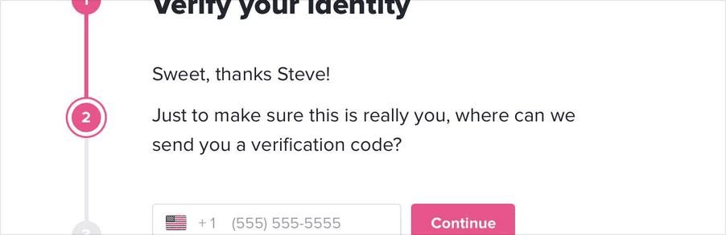
Words are everywhere in a user interface, and choosing the right ones is just as (if not more) important than choosing the right color or typeface.
在用户界面中，文字无处不在，恰当的措辞选择与颜色或字体的选择同等重要，甚至可能更为关键。
Deciding what you actually want / 确定你真正想要的东西
A lot of the time you’ll probably just have a gut feeling for the personality you’re going for. But if you don’t, a great way to simplify the decision is to take a look at other sites used by the people you want to reach.
通常，你可能会根据自己的直觉来把握所追求的个性。如果你还没有明确的方向，一个有效的简化决策的方法是观察你想要吸引的用户群体所使用的其他网站。
If they are mostly pretty “serious business”, maybe that’s how your site should look too. If they are more playful with a bit of humor, maybe that’s a better direction to take.
如果目标用户群体主要使用的是典型的「严肃商务」风格网站，那么你的网站设计可能也应该体现出类似的风格。如果这些用户更倾向于活泼且带有幽默感的网站，那么在设计上融入这些元素可能是一个更佳的选择。
Just try not to borrow too much from direct competitors, you don’t want to look like a second-rate version of something else.
尽量避免从直接竞争对手那里过度借鉴，以免你的设计看起来像是其他产品的二流版本。
Limit your choices / 缩小选择范围
Having millions of colors and thousands of fonts to choose from might sound nice in theory, but in practice it’s usually a paralyzing curse.
虽然理论上拥有数百万种颜色和数千种字体可供选择似乎很有吸引力，但实际上这种情况往往会使人陷入选择困难。
And it’s not just fonts and colors, either — you can easily waste time agonizing over almost any minor design decision.
问题不仅限于字体和颜色 —— 在许多小的设计决策上，人们往往容易耗费时间，陷入过度纠结。
- Should this text be 12px or 13px?
- Should this box shadow have a 10% opacity or a 15% opacity?
- Should this avatar be 24px or 25px tall?
- Should I use a medium font weight for this button or semibold?
- Should this headline have a bottom margin of 18px or 20px?
- 文字大小是选择 12px 还是 13px？
- 阴影的不透明度是设为 10% 还是 15%？
- 头像的高度是 24px 还是 25px？
- 按钮的字体粗细是用中等还是半粗体？
- 标题的底部边距是设为 18px 还是 20px？
When you’re designing without constraints, decision-making is torture because there’s always going to be more than one right choice.
在没有限制的设计过程中，做出决策是一项挑战，因为往往存在多种正确的选项。
For example, these buttons all have different background colors, but it’s almost impossible to tell the difference between them by just looking at them.
以这些按钮为例，尽管它们各自拥有不同的背景色彩，但仅通过视觉却几乎无法辨认出它们之间的差别。

How are you supposed to make a confident decision if none of these would really be bad choices?
当所有这些选项都不会导致不良结果时，你该如何自信地做出决策呢？
Define systems in advance / 事先建立体系
Instead of hand-picking values from a limitless pool any time you need to make a decision, start with a smaller set of options.
与其在每次决策时从无限的选择中手工挑选，不如一开始就限定在一个较小的选项集中进行选择。
Don’t reach for the color picker every time you need to pick a new shade of blue — choose from a set of 8-10 shades picked out ahead of time.
在挑选新蓝色调时，无需每次都使用颜色选择器。相反，应该从预先选定的 8 至 10 种颜色中选取。
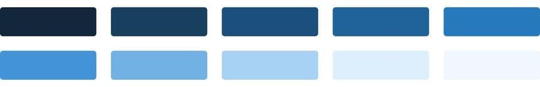
Similarly, don’t tweak a font size one pixel at a time until it looks perfect. Define a restrictive type scale in advance and use that to make any future font size decisions.
同样，不要通过逐像素微调来追求完美的字体大小。应该提前设定一个具有限制性的字体比例表，并依据此表来决定所有未来的字体大小选择。

When you build systems like this, you only have to do the hard work of picking the initial values once instead of every time you’re designing a new piece of UI. It’s a bit more work up front, but it’s worth it — it’ll save you a ton of decision fatigue down the road.
通过构建此类体系，你只需一次性完成选择初始值的艰巨工作，而不必在每次设计新的用户界面元素时重复这一过程。虽然前期可能需要更多的努力，但这是非常值得的 —— 它将在未来缓解你大量的决策疲劳。
Designing by process of elimination / 利用排除法进行设计
When you’re designing using a constrained set of values, decision-making is a lot easier because there are a lot fewer “right” choices.
使用一组限定的值进行设计时，做出决策会更加简单，因为可选的「正确」选项数量大幅减少。
For example, say you’re trying to choose a size for an icon. You’ve defined a sizing scale in advance where your only small-to-medium sized options are 12px, 16px, 24px, and 32px.
以图标大小的选择为例。如果你已经事先设定了一个尺寸比例，那么你在小尺寸到中等尺寸的选项中，仅有的选择可能是 12px、16px、24px 和 32px。

To pick the best option, start by taking a guess at which one will look best, maybe 16px. Then try the values on either side (12px and 24px) for comparison.
要挑选最佳选项，你可以先猜测哪个尺寸看起来最合适，比如 16px。接着，尝试使用它左右两边的尺寸（即 12px 和 24px）来做出对比。

Chances are, two of those options will seem like obviously bad choices. If it’s the options on the outside, you’re done — the middle option is the only good choice.
通常情况下，这些选项中有两个会明显不是好的选择。如果这两个是边缘选项，那么你的决策就简单了 —— 中间的选项自然成为了最佳选择。
If one of the outer options looks best, do another comparison using that option as the “middle” value and make sure there’s not a better choice.
如果发现其中一个边缘选项实际上是最佳选择，那么应该以该选项为「中心」再次进行比较，以确保没有遗漏更佳的选择。

This approach works for anything where you’ve defined a system. When you’re limited to a set of options that all look noticeably different, picking the best one is a piece of cake.
当你在一个你已经建立体系的领域内工作时，这种方法非常有效。如果你的选择范围被限定在一组明显有区别的选项之内，那么选出最佳选项就会变得易如反掌。
Systematize everything / 体系化一切
The more systems you have in place, the faster you’ll be able to work and the less you’ll second guess your own decisions.
随着你建立的体系越来越多，你的工作效率将大幅提升，同时也会减少对自己决策的犹豫和怀疑。
You’ll want systems for things like:
你应该为以下方面建立体系：
- Font size
- Font weight
- Line height
- Color
- Margin
- Padding
- Width
- Height
- Box shadows
- Border radius
- Border width
- Opacity
- 字体大小
- 字体粗细
- 行高
- 颜色
- 外边距
- 内边距
- 宽度
- 高度
- 阴影
- 边框圆角
- 边框宽度
- 不透明度
…and anything else you run into where it feels like you’re laboring over a low-level design decision.
以及任何其他你在设计过程中遇到的，需要在细节上花费大量精力的低层次决策问题。
You don’t have to define all of this stuff ahead of time, just make sure you’re approaching design with a system-focused mindset. Look for opportunities to introduce new systems as you make new decisions, and try to avoid having to make the same minor decision twice.
你无需一开始就定义所有这些元素，关键是要以体系化的思维方式来处理设计问题。在制定新决策时，寻找机会建立新的体系，并努力避免重复进行相同的小决策。
Designing with systems is going to be a recurring theme throughout this book, and in later chapters we’ll talk about building a lot of these systems in finer detail.
体系化设计是本书的一个核心议题，而在后续章节，我们会详细探讨这些体系构建的诸多细节。
Hierarchy is Everything / 层次结构是一切
Not all elements are equal / 元素之间并非平等
When you think of visual design as “styling things so they look good”, it’s easy to see why it might feel hard to achieve without innate artistic talent. But it turns out that one of the biggest factors in making something “look good” has nothing to do with superficial styling at all.
人们常将视觉设计理解为「美化事物」，这使得没有天赋的艺术家觉得难以达成。然而，事实证明，让事物「看起来好看」的一个关键因素实际上与表面的装饰无关。
Visual hierarchy refers to how important the elements in an interface appear in relation to one another, and it’s the most effective tool you have for making something feel “designed”.
视觉层级是指界面元素根据其重要性相互之间的呈现关系，它是使你的作品具有「设计感」的最有效手段。
When everything in an interface is competing for attention, it feels noisy and chaotic, like one big wall of content where it’s not clear what actually matters:
如果用户界面中的每个元素都在争夺用户的注意力，那么它将显得喧闹和混乱，仿佛是一整面内容繁杂的墙，让人难以辨识出哪些信息才是真正关键的：

When you deliberately de-emphasize secondary and tertiary information, and make an effort to highlight the elements that are most important, the result is immediately more pleasing, even though the color scheme, font choice, and layout haven’t changed:
通过刻意减少对次要和第三重要信息的强调，并着力突出最关键的元素，即便在配色、字体和布局保持不变的情况下，整体效果也会立刻变得更加赏心悦目：

So how do you actually make this happen? In the following chapters, we’ll cover a number of specific strategies you can use to introduce hierarchy into your designs.
要实现这一点，具体应该怎么做呢？在随后的章节里，我们会详细讨论多种特定策略，这些策略可以用来在你的设计中建立层级关系。
Size isn’t everything / 尺寸不是一切
Relying too much on font size to control your hierarchy is a mistake — it often leads to primary content that’s too large, and secondary content that’s too small.
过分依赖字体大小来建立视觉层级是一个常见的误区，可能会导致主要内容显得过大，而次要内容则显得过小。
Instead of leaving all of the heavy lifting to font size alone, try using font weight or color to do the same job.
与其完全依赖字体大小来建立视觉层级，不如尝试利用字体的粗细或颜色来达到相同的目的。
For example, making a primary element bolder lets you use a more reasonable font size, and often does a better job at communicating its importance anyways:
例如，将主要元素的字体加粗，不仅可以让你采用更为适中的字体大小，而且在传达其重要性时往往更为有效：
Similarly, using a softer color for supporting text instead of a tiny font size makes it clear that the text is secondary while sacrificing less on readability:
类似地，使用较柔和的颜色来呈现辅助文本，而不是采用过小的字体大小，这样做在降低文本的主导性的同时，对可读性的影响较小：
Try and stick to two or three colors:
尝试限制你的配色方案在两种或三种颜色之内：
- A dark color for primary content (like the headline of an article)
- A grey for secondary content (like the date an article was published)
- A lighter grey for tertiary content (maybe the copyright notice in a footer)
- 对于主要内容，选择一种深色（例如文章标题）
- 对于次要内容，采用灰色（例如文章发布日期）
- 对于第三级内容，使用更浅的灰色（如页脚的版权声明）
Similarly, two font weights are usually enough for UI work:
在用户界面设计中，通常使用两种不同的字体粗细就足够区分内容的层级：
- A normal font weight (400 or 500 depending on the font) for most text
- A heavier font weight (600 or 700) for text you want to emphasize
- 对于大部分文本内容，选择标准字体粗细（如 400 或 500，具体取决于所使用的字体）
- 对于需要突出显示的文本，采用更粗的字体（如 600 或 700）

Stay away from font weights under 400 for UI work — they can work for large headings but are too hard to read at smaller sizes. If you’re considering using a lighter weight to de-emphasize some text, use a lighter color or smaller font size instead.
在用户界面设计工作中，应避免采用 400 以下的字体粗细，因为虽然它们适合用于大标题，但在较小尺寸时阅读性较差。如果你想通过使用较轻的字体粗细来降低某些文本的视觉重要性，可以考虑改用较浅的颜色或选择较小的字体大小来实现这一目的。
Don’t use grey text on colored backgrounds / 不要在彩色背景上使用灰色文本
Making text a lighter grey is a great way to de-emphasize it on white backgrounds, but it doesn’t look so great on colored backgrounds.
在白色背景上，使用浅灰色文本是一种有效的降低其视觉重要性的策略，然而，这种方法在彩色背景上可能效果不佳。

That’s because the effect we’re actually seeing with grey on white is reduced contrast.
实际上，灰色文本在白色背景上产生的效果是降低了对比度，这有会减少文本的视觉强调。
Making the text closer to the background color is what actually helps create hierarchy, not making it light grey.
但是通过使文本颜色更接近背景色更有助于帮助建立视觉层级，而不是简单地将其变为浅灰色。

You might think that the easiest way to achieve this is to use white text and reduce the opacity:
你可能认为，通过使用白色文字并调低其不透明度是最直接方式：
While this does reduce the contrast, it often results in text that looks dull, washed out, and sometimes even disabled.
降低不透明度确实能够减少文字的视觉对比，但这种方法往往会使文字显得单调、没有生气，甚至给人一种不可点击或不可用的错觉。
Even worse, using this approach on top of an image or pattern means the background will show through the text:
更糟糕的是，将此方法应用于图像或图案之上，将导致背景透过文字显现，影响文字的可读性：
A better approach is to hand-pick a new color, based on the background color.
更优的方法是依据背景色彩，手动选择一种合适的新颜色。
Choose a color with the same hue, and adjust the saturation and lightness until it looks right to you:
选择一个与背景色相匹配的色相，并调整其饱和度和亮度，直至达到你满意的视觉效果：

Hand-picking a color this way makes it easy to reduce the contrast without the text looking faded.
采用这种手工挑选颜色的方法，可以在不使文字显得褪色的情况下，轻松实现对比度的降低。
Emphasize by de-emphasizing / 通过弱化来强调
Sometimes you’ll run into a situation where the main element of an interface isn’t standing out enough, but there’s nothing you can add to it to give it the emphasis it needs.
在某些情况下，你可能会发现用户界面中的核心元素并不如预期那样醒目，同时你也无法通过添加新元素来增加其视觉强调。
For example, despite trying to make this active nav item “pop” by giving it a different color, it still doesn’t really stand out compared to the inactive items:
以活动的导航项为例，即使我们尝试通过改变颜色让它更加「醒目」，但如果与非活动项相比较，它看起来仍然不够突出：
When you run into situations like this, instead of trying to further emphasize the element you want to draw attention to, figure out how you can de-emphasize the elements that are competing with it.
面对这种情况，与其继续尝试强化你希望引人注目的元素，不如考虑如何弱化那些与其争夺注意力的元素。
In this example, you could do that by giving the inactive items a softer color so they sit more in the background:
以这个例子来说，可以通过为非活动项选择一种更柔和的颜色，使它们在视觉上更靠后，从而让它们更加融入背景：

You can apply this thinking to bigger pieces of an interface as well. For example, if a sidebar feels like it’s competing with your main content area, don’t give it a background color — let the content sit directly on the page background instead:
这种思路同样适用于界面更大的元素。比如，如果侧边栏看起来与主要内容区域争夺视觉焦点，就不要为其设置背景色 —— 而是让其内容直接显示在页面的背景之上：

Labels are a last resort / 标签是最后的手段
Put down the accessibility pitchfork — this isn’t about forms.
请不要急于用可访问性的标准来指责 —— 这里讨论的不是表单问题。
译者注：通常认为标签可以提高可访问性，而这一小节提出将标签作为最后的手段（即减少使用标签），则可能降低可访问性。
When presenting data to the user (especially data from the database), it’s easy to fall into the trap of displaying it using a naive label: value format.
在向用户展示数据（特别是来自数据库的数据）时，很容易陷入使用简单的「标签：值」格式来展示数据的陷阱。

The problem with this approach is that it makes it difficult to present the data with any sort of hierarchy; every piece of data is given equal emphasis.
这种方式存在一个问题，即它难以表现出数据之间的层级关系；结果是，所有数据项都获得了相同的视觉重要性。
You might not need a label at all / 你或许根本不需要标签
In a lot of situations, you can tell what a piece of data is just by looking at the format.
在许多情况下，通过查看数据的呈现格式，我们就能辨识出数据的内容。
For example, janedoe@example.com is an email address, (555) 765-4321 is a phone number and $19.99 is a price.
例如，janedoe@example.com 是一个电子邮件地址，(555) 765-4321 是一个电话号码，而 $19.99 是一个价格。
When the format isn’t enough, the context often is. When you see the phrase “Customer Support” listed below someone’s name in an employee directory, you don’t need a label to make the connection that that is the department the person works in.
如果数据的格式本身不足以让信息清晰，那么上下文环境往往能够帮助我们理解。比如，在员工名册中，当看到某人名字下面写着「客户支持」时，我们不必依赖额外的标签就能明白这个人隶属于客户服务部门。

When you’re able to present data without labels, it’s much easier to emphasize important or identifying information, making the interface easier to use while at the same time making it feel more “designed”.
能够不依赖标签来呈现数据时，可以更容易地突出重要或识别性信息，这不仅让界面变得更加易用，同时也赋予了它更强的「设计感」。
Combine labels and values / 合并标签和值
Even when a piece of data isn’t completely clear without a label, you can often avoid adding a label by adding clarifying text to the value.
即便某些数据项在缺少标签的情况下不够明确，我们也可以通过在数值旁边附加说明性文字来省去标签的使用。
For example, if you need to display inventory in an e-commerce interface, instead of “In stock: 12”, try something like “12 left in stock”.
以电商界面中展示库存情况为例，与其写成「库存：12」，不如采用「库存剩余 12 件」这样的表达方式。
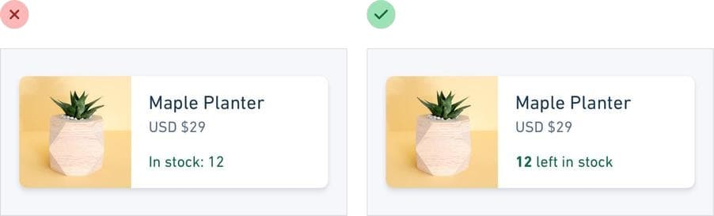
If you’re building a real estate app, something like “Bedrooms: 3” could simply become “3 bedrooms”.
在开发房地产应用时，可以将「卧室：3」直接改写为「3 间卧室」，使信息表达更为简洁。
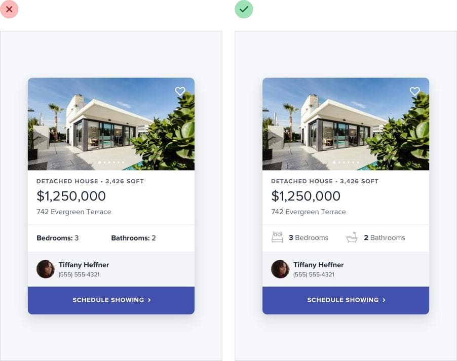
When you’re able to combine labels and values into a single unit, it’s much easier to give each piece of data meaningful styling without sacrificing on clarity.
能够将标签和数值整合为单一单元时，就可以在不损失信息清晰度的前提下，为每个数据项添加有意义的样式设计。
Labels are secondary / 标签是辅助
Sometimes you really do need a label; for example when you’re displaying multiple pieces of similar data and they need to be easily scannable, like on a dashboard.
在某些情况下，使用标签是必要的；比如，在仪表板等环境中展示多个相似数据项时，为了便于快速浏览，标签的使用就变得尤为重要。
In these situations, add the label, but treat it as supporting content. The data itself is what matters, the label is just there for clarity.
遇到这类情况时，应当添加标签，但应将其作为补充信息对待。真正关键的是数据本身，而标签的作用主要是为了提高信息的可读性。

De-emphasize the label by making it smaller, reducing the contrast, using a lighter font weight, or some combination of all three.
要降低标签的视觉重要性，可以采取以下措施：缩小标签的字号、降低其与背景的对比度、选择较细的字体，或者结合这三种方法来实现。
When to emphasize a label / 何时强调标签
If you’re designing an interface where you know the user will be looking for the label, it might make sense to emphasize the label instead of the data.
在设计界面时，如果你知道用户将会寻找特定的标签，那么增强标签的视觉显著性而不仅仅是数据，可能是更合理的选择。
This is often the case on information-dense pages, like the technical specifications of a product.
在信息量很大的页面上，如产品技术规格的详细说明，这种情况尤为常见。
If a user is trying to find out the dimensions of a smartphone, they’re probably scanning the page for words like “depth”, not “7.6mm”.
当用户试图查找智能手机的尺寸时，他们通常会在页面上搜索「厚度」这样的关键词，而不是直接寻找「7.6 毫米」这样的具体数值。

Don’t de-emphasize the data too much in these scenarios; it’s still important information. Simply using a darker color for the label and a slightly lighter color for the value is often enough.
在这种情况下，不应过度降低数据的视觉重要性；它仍然是关键信息。通常，只需为标签选择较深的颜色，而为数值选择略浅的颜色，这样的对比就已足够。
Separate visual hierarchy from document hierarchy / 将视觉层级与文档层级分开
It’s important to use semantic markup when building for the web, which means you’ll often be using heading tags like h1, h2, or h3 if you decide to add a title to part of an interface.
在进行网页构建时，采用语义化标签非常关键，这表示在为用户界面的某个部分添加标题时，你可能会使用 h1、h2 或 h3 等标题标签。
By default, web browsers assign progressively smaller font sizes to heading elements, so an h1 is pretty large, and an h6 is pretty small. This can be helpful for document-style content like articles or documentation, but it can encourage some bad decisions in application UIs.
浏览器默认为 HTML 标题标签设置按等级递减的字体大小，其中 h1 标签的字体最大，而 h6 标签的字体最小。这种设计对于文章或文档等阅读型内容很有益处，但在应用程序的用户界面设计中，可能诱发一些不良的设计选择。
Using an h1 tag to add a title like Manage Account to a page makes perfect sense semantically, but because we’re trained to believe that h1 elements should be big, it’s easy to fall into the trap of making those titles bigger than they really need to be.
在语义上，使用 h1 标签为页面添加例如「管理账户」这样的标题是恰当的，但由于我们通常认为 h1 元素应该是较大的字体，这可能会导致我们不自觉地将这些标题做得过大，超出了实际所需的尺寸。
A lot of the time, section titles act more like labels than headings — they are supportive content, they shouldn’t be stealing all the attention.
在许多情况下，部分标题的功能更像是「标签」而非传统意义上的「标题」—— 它们作为补充信息，不应该吸引过多的注意力。
Usually the content in that section should be the focus, not the title. That means that a lot of the time, titles should actually be pretty small:
这时我们应该关注的是该部分的内容，而不是标题。因此，许多时候，标题的大小应当偏小：

Taken to the extreme, you might even include section titles in your markup for accessibility reasons but completely hide them visually because the content speaks for itself.
在某些情况下，为了可访问性考虑，你可能会在代码中保留小节标题，但如果内容已经清晰表达了必要的信息，你可以选择在视觉上将其完全隐藏。
Don’t let the element you’re using influence how you choose to style it — pick elements for semantic purposes and style them however you need to create the best visual hierarchy.
不要因为所使用的元素（HTML 标签）本身而决定其样式 —— 应基于语义目的来选取元素（HTML 标签），并根据创建最佳视觉层级的需要来决定其样式。
Balance weight and contrast / 平衡重量与对比度
译者注：重量即字体重量，也叫字重或字体粗细。
The reason bold text feels emphasized compared to regular text is that bold text covers more surface area — in the same amount of space, more pixels are used for text than for the background.
粗体文本之所以给人一种强调的感觉，是因为它在视觉上覆盖了更大的区域。在相同的空间范围内，粗体字比背景的像素占比更大，从而使得文字显得更加突出。
So why is this interesting? Well it turns out that the relationship between surface area and hierarchy has implications on other elements in a UI as well.
这背后的意义何在？实际上，表面积与视觉层级之间的关系也对用户界面中的其他元素产生了影响。
Using contrast to compensate for weight / 使用对比度来平衡重量
One of the places understanding this relationship becomes important is when working with icons.
这种关系的理解在某些情况下尤为重要，特别是当涉及到图标设计时。
Just like bold text, icons (especially solid ones) are generally pretty “heavy” and cover a lot of surface area. As a result, when you put an icon next to some text, the icon tends to feel emphasized.
与粗体文字相似，图标（特别是实心图标）在视觉上往往显得较为「重」，占据较大的视觉空间。所以当你将图标与文本并置时，图标往往会显得更加突出。
Unlike text, there’s no way to change the “weight” of an icon, so to create balance it needs to be de-emphasized in some other way.
不同于文本可以通过字体粗细来调整视觉重量，图标的视觉重量是固定的，因此要实现视觉平衡，就需要通过其他方法来降低其视觉显著性。
A simple and effective way to do this is to lower the contrast of the icon by giving it a softer color.
降低图标对比度的一个简单有效方法是为其选择一种更柔和的颜色。

This works anywhere you need to balance elements that have different weights. Reducing the contrast works like a counterbalance, making heavier elements feel lighter even though the weight hasn’t changed.
这种方法适用于任何需要平衡视觉重量不同的元素的场合。通过降低对比度，可以起到平衡作用，让视觉重量较大的元素感觉上更轻盈，尽管它们的视觉重量实际上并没有变化。
Using weight to compensate for contrast / 使用重量来平衡对比度
Just like how reducing contrast helps to de-emphasize heavy elements, increasing weight is a great way to add a bit of emphasis to low contrast elements.
正如降低对比度可以减轻较重元素的视觉强调，相应地，增加元素的视觉重量是为那些对比度较低的元素增添强调效果的有效方式。
This is useful when things like thin 1px borders are too subtle using a soft color, but darkening the color makes the design feel harsh and noisy.
这种方法在处理如 1px 细边框等元素时非常有用，因为使用柔和的颜色可能使它们显得过于细腻，而加深颜色又可能使设计显得过于强硬和杂乱。

Making the border a bit heavier by increasing the width helps to emphasize it without losing the softer look:
通过增加边框的宽度，我们可以在不牺牲柔和外观的同时，有效强调这些边框：

Semantics are secondary / 语义是次要的
When there are multiple actions a user can take on a page, it’s easy to fall into the trap of designing those actions based purely on semantics.
在用户面对页面上的多个可执行操作时，我们可能会错误地仅根据操作的语义含义来设计它们。

Semantics are an important part of button design, but that doesn’t mean you can forget about hierarchy.
虽然语义在按钮设计中扮演重要角色，但这并不是说我们可以忽视视觉层级的重要性。
Every action on a page sits somewhere in a pyramid of importance. Most pages only have one true primary action, a couple of less important secondary actions, and a few seldom used tertiary actions.
每个页面上的操作都可以视为位于一个重要性金字塔的不同层级。大多数情况下，页面上会有一个主要的操作，几个次要的操作，以及一些不常用的第三级操作。
When designing these actions, it’s important to communicate their place in the hierarchy.
设计这些操作时，重要的是要清晰地表达它们在层级结构中的位置。
- Primary actions should be obvious. Solid, high contrast background colors work great here.
- Secondary actions should be clear but not prominent. Outline styles or lower contrast background colors are great options.
- Tertiary actions should be discoverable but unobtrusive. Styling these actions like links is usually the best approach.
- 主要操作应该显而易见。 实心的、高对比度的背景颜色在这里效果很好。
- 次要操作应该清晰但不突出。 轮廓样式或较低对比度的背景颜色是很好的选择。
- 第三级操作应该是可发现的，但不显眼。 通常将这些操作设计成链接样式是最佳方法。

When you take a hierarchy-first approach to designing the actions on page, the result is a much less busy UI that communicates more clearly:
采取以层级为先的设计方法来规划页面操作，将带来一个更为简洁明了的用户界面：
Destructive actions / 破坏性行为
Being destructive or high severity doesn’t automatically mean a button should be big, red, and bold.
操作具有破坏性或高风险级别，并不意味着按钮设计必须是大尺寸、红色和加粗。
If a destructive action isn’t the primary action on the page, it might be better to give it a secondary or tertiary button treatment.
如果这类操作在页面上并非主要功能，可能更适宜采用次要或第三级按钮的设计。

Combine this with a confirmation step where the destructive action actually is the primary action, and apply the big, red, bold styling there.
而在执行破坏性操作的确认步骤中 —— 此时该操作成为主要功能 —— 则可以采用更为醒目的大号、红色和加粗的设计风格。
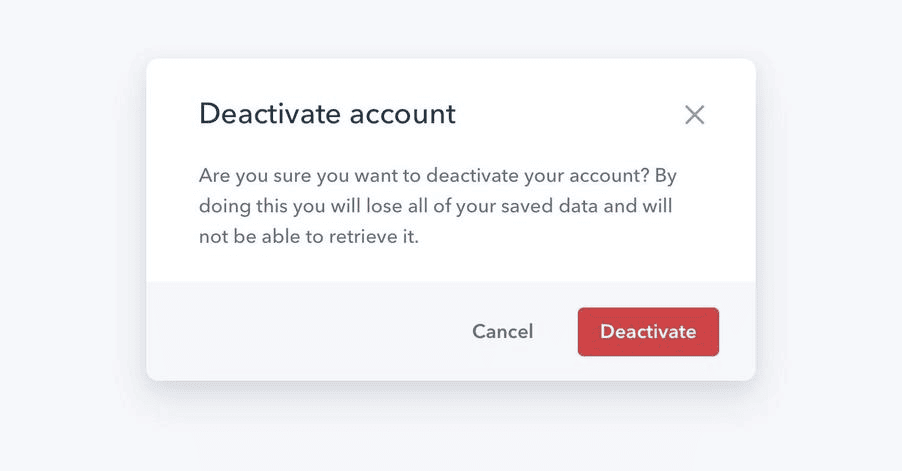
Layout and Spacing / 布局和间距
Start with too much white space / 在开始保留更多留白
One of the easiest ways to clean up a design is to simply give every element a little more room to breathe.
一种简化设计的有效方法是为界面上的每个元素提供更多的空间，让它们有更充足的「呼吸」空间。

Sounds simple enough, right? So how come we don’t usually do it?
这听起来很简单，但我们通常为什么不这么做呢？
White space should be removed, not added / 通过移除留白而非添加来设计留白
When designing for the web, white space is almost always added to a design — if something looks little too cramped, you add a bit of margin or padding until things look better.
在网页设计中，留白几乎总是通过添加实现 —— 如果某个部分看起来过于拥挤，我们就会添加一些外边距或内边距，直到视觉效果改善。
The problem with this approach is that elements are only given the minimum amount of breathing room necessary to not look actively bad. To make something actually look great, you usually need more white space.
但这种方法的问题在于，我们通常只为元素提供刚好足够的空间，以避免它们看起来非常糟糕。要真正让设计看起来出色，我们往往需要更多的留白。
A better approach is to start by giving something way too much space, then remove it until you’re happy with the result.
一种更好的方法是，开始时给元素过多的空间，然后逐步减少，直至达到满意的效果。
You might think you’d end up with too much white space this way, but in practice, what might seem like “a little too much” when focused on an individual element ends up being closer to “just enough” in the context of a complete UI.
你可能会担心这样做最终会留下过多的留白，但实际上，当你专注于单个元素时，那些看似「过多】的空间，在整体用户界面中往往正是「恰到好处」。
Dense UIs have their place / 密集 UI 有其用武之地
While interfaces with a lot of breathing room almost always feel cleaner and simpler, there are certainly situations where it makes sense for a design to be much more compact.
尽管那些留有大量空间的界面通常看起来更加简洁和清晰，但确实存在一些情况，设计更为紧凑是合理的。
For example, if you’re designing some sort of dashboard where a lot of information needs to be visible at once, packing that information together so it all fits on one screen might be worth making the design feel more busy.
比如，如果你在设计一个需要一次性展示大量信息的仪表板，将所有信息紧凑地布局以适应单一屏幕，可能会使设计显得较为密集，但这是值得的。

The important thing is to make this a deliberate decision instead of just being the default. It’s a lot more obvious when you need to remove white space than it is when you need to add it.
关键在于我们应该有意识地做出关于留白的决定，而不是仅仅依赖于默认选择。通常，识别何时需要减少留白以提高界面紧凑性比识别何时需要增加留白以提升清晰度要容易得多。
Establish a spacing and sizing system / 建立间距和尺寸体系
You shouldn’t be nitpicking between 120px and 125px when trying to decide on the perfect size for an element in your UI.
在确定用户界面元素的尺寸时，无需在 120px 和 125px 之间过分纠结。
Painfully trialing arbitrary values one pixel at a time will drastically slow you down at best, and create ugly, inconsistent designs at worst.
逐像素地尝试任意值，不仅会极度消耗时间，还可能导致设计难看且缺乏一致性。

Instead, limit yourself to a constrained set of values, defined in advance.
因此，应该采用一种更好的方法：事先定义一组有限的值，然后在这些值中进行选择。
A linear scale won’t work / 线性比例并不适用
Creating a spacing and sizing system isn’t quite as simple as something like “make sure everything is a multiple of 4px” — a naive approach like that doesn’t make it any easier to choose between 120px and 125px.
建立一个间距和尺寸体系并不像简单遵循「所有尺寸为 4px 的倍数」这样直接 —— 这种初级方法并不能有效帮助你在 120px 和 125px 之间做出决策。
For a system to be truly useful, it needs to take into consideration the relative difference between adjacent values.
一个真正有效的体系需要考虑到相邻值之间的相对差异。
At the small end of the scale (like the size of an icon, or the padding inside a button), a couple of pixels can make a big difference. Jumping from 12px to 16px is an increase of 33%!
在较小的尺寸端（例如图标大小或按钮内部的填充），几像素的差异可能非常明显。例如，从 12px 增加到 16px 意味着增加了 33%！

But at the large end (the width of a card, or the vertical spacing in a landing page hero), a couple of pixels is basically imperceivable. Even increasing the width of a card from 500px to 520px is only a difference of 4%, which is eight times less significant than the jump from 12px to 16px.
然而，在较大的尺寸端（如卡片宽度或着陆页主要区域的垂直间距），几像素的差异几乎无法察觉。即使将卡片宽度从 500px 增加到 520px，变化率仅为 4%，这比 12px 到 16px 的增加显著性小了八倍。

If you want your system to make sizing decisions easy, make sure no two values in your scale are ever closer than about 25%.
如果你想让你的体系简化尺寸决策过程，请确保尺度上任意两个值的差异不低于 25%。
Defining the system / 构建体系
Just like you don’t want to toil over arbitrary values when sizing an element or fine-tuning the space between elements, you don’t want to build your spacing and sizing scale from arbitrary values either.
在确定元素大小或微调元素间距时，我们应避免纠结于任意值；同样，在构建间距和尺寸体系时，我们也不应纠结于从任意值开始。
A simple approach is to start with a sensible base value, then build a scale using factors and multiples of that value.
一种简单的方法是从一个合理的基础值着手，然后基于这个值的因数和倍数来建立一个比例体系。
16px is a great number to start with because it divides nicely, and also happens to be the default font size in every major web browser.
16px 就是一个很好的起始数字，因为它可以很好地被整除，同时也恰好是所有主流网络浏览器的默认字体大小。
The values at the small end of the scale should start pretty packed together, and get progressively more spaced apart as you get further up the scale.
在尺度的较小端，值应该相对集中；随着尺度的增加，这些值之间的间隔应逐渐变得更宽。
Here’s an example of a fairly practical scale built using this approach:
以下是一个根据这种方法建立的实用尺度的示例：

Using the system / 应用体系
Once you’ve defined your spacing and sizing system, you’ll find that you’re able to design a hell of a lot faster, especially if you design in the browser (sticking to a system is easier when you’re typing in numbers than when you’re dragging with the mouse.)
一旦你建立了间距和尺寸规范，你会发现设计速度会大大提升，尤其是在浏览器中进行设计时（使用体系规范时，输入数值比用鼠标拖拽更为便捷。）。
Need to add some space under an element? Grab a value from your scale and try it out. Not quite enough? The next value is probably perfect.
需要在某个元素下增加空间？从你的尺寸体系中选择一个值进行尝试。如果空间不够？试试下一个更大的值，它很可能就是合适的。
While the workflow improvements are probably the biggest benefit, you’ll also start to notice a subtle consistency in your designs that wasn’t there before, and things will look just a little bit cleaner.
除了工作流程的优化可能是最明显的好处，你还将逐渐发现设计中出现了一种之前未曾有的微妙一致性，使得整体外观更加整洁。
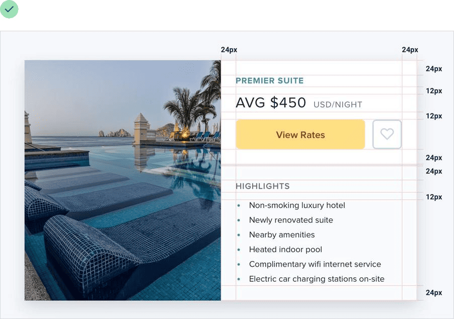
A spacing and sizing system will help you create better designs, with less effort, in less time. Design advice doesn’t get much more valuable than that.
一个间距和尺寸体系将帮助你以更低的劳动强度、在更短的时间内创造出更优秀的设计。在设计建议中，这可以说是极具价值的。
You don’t have to fill the whole screen / 不必填满整个屏幕
Remember when 960px was the de facto layout width for desktop-size designs? These days you’d be hard-pressed to find a phone with a resolution that low.
你是否记得 960px 宽度曾是桌面设计的标准？如今，找到分辨率如此低的手机几乎是不可能的。
So it’s no surprise that when most of us open our design tool of choice on our high resolution displays, we give ourselves at least 1200-1400px of space to fill. But just because you have the space, doesn’t mean you need to use it.
因此，当我们在高分辨率屏幕上打开常用的设计软件时，很自然地会给自己分配 1200~1400px 的广阔空间。但拥有这样的空间，并不意味着你必须完全使用它。
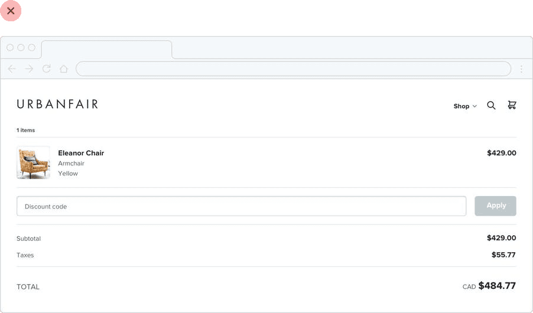
If you only need 600px, use 600px. Spreading things out or making things unnecessarily wide just makes an interface harder to interpret, while a little extra space around the edges never hurt anyone.
如果你的设计内容只需要 600px 的宽度，那就只使用 600px。无谓地拉宽界面或使元素过于分散，会使用户更难理解界面，而在边缘保留适当的空间则总是有益的。
This is just as applicable to individual sections of an interface, too. You don’t need to make everything full-width just because something else (like your navigation) is full-width.
这一原则同样适用于界面的各个部分。不要仅仅因为导航栏等其他元素采用了全宽设计，就强迫所有内容都变成全宽。

Give each element just the space it needs — don’t make something worse just to make it match something else.
为每个元素分配其真正需要的空间 —— 不要为了追求一致性而牺牲了设计的合理性。
Shrink the canvas / 缩小设计区域
If you’re having a hard time designing a small interface on a large canvas, shrink the canvas! A lot of the time it’s easier to design something small when the constraints are real.
在大尺寸的画布上设计小型界面时，如果感到困难，尝试缩小画布尺寸！真实限制条件下的设计往往更易于操作。
If you’re building a responsive web application, try starting with a ~400px canvas and designing the mobile layout first.
设计响应式网页应用时，你可以先从一个大约 400px 宽的画布着手，优先设计移动端的布局。

Once you have a mobile design you’re happy with, bring it over to a larger size screen and adjust anything that felt like a compromise on smaller screens. Odds are you won’t have to change as much as you think.
完成了令你满意的移动端设计后，再将其适配到更大的屏幕，并调整那些在小尺寸屏幕上不得不妥协的部分。你可能会发现，需要改动的地方比你预期的要少。

Thinking in columns / 采用分列设计思路
If you’re designing something that works best at a narrower width but feels unbalanced in the context of an otherwise wide UI, see if you can split it into columns instead of just making it wider.
如果你的设计在较窄的宽度下表现更佳，但在宽阔的用户界面中显得不协调，考虑将其分割成多列，而不是简单地加宽。
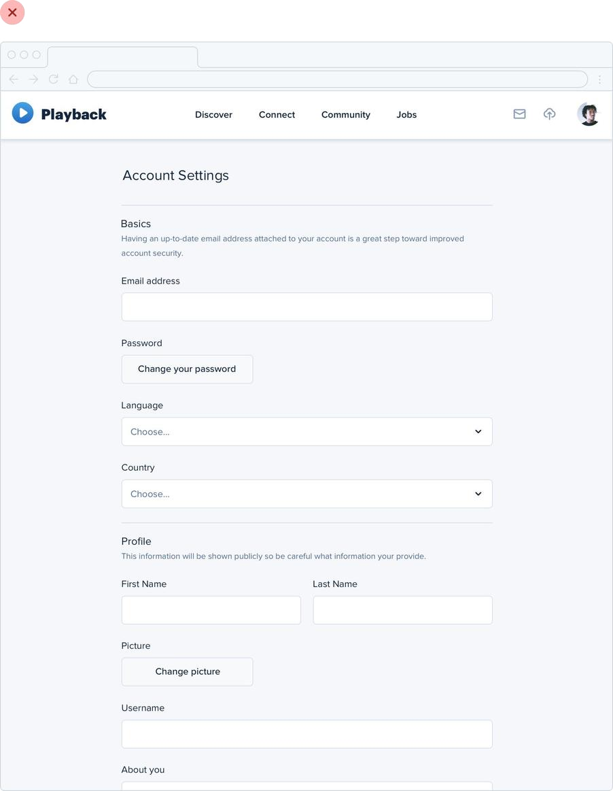
If you wanted to make better use of the available space without making the form harder to use, you could break the supporting text out into a separate column:
例如，为了在不增加表单复杂性的同时更好地利用空间，你可以将辅助文本独立成列：

This makes the design feel more balanced and consistent without compromising on the optimal width for the form itself.
这种方法可以在保持表单最佳宽度的同时，让整体设计看起来更加均衡和统一。
Don’t force it / 不要硬来
Just like you shouldn’t worry about filling the whole screen, you shouldn’t try to cram everything into a small area unnecessarily either.
你不应该强求填满整个屏幕，同样地，也不应该无端地将内容硬塞进一个狭小的空间。
If you need a lot of space, go for it! Just don’t feel obligated to fill it if you don’t have to.
如果你的设计确实需要更多的空间，那就大胆地扩展它！但如果你不需要那么多空间，就不要感觉必须去填满它。
Grids are overrated / 网格被高估了
Using a system like a 12-column grid is a great way to simplify layout decisions, and can bring a satisfying sense of order to your designs.
采用 12 列网格等系统是简化布局决策的有效方式，能够为你的设计带来一种有序的美感。
But even though grids can be useful, outsourcing all of your layout decisions to a grid can do more harm than good.
然而，尽管网格系统有其用处，如果完全依赖网格系统来做出所有布局决策，可能会带来更多的负面影响而非好处。
Not all elements should be fluid / 并非所有元素都应该具有流动性
Fundamentally, a grid system is just about giving elements fluid, percentage-based widths, where you’re choosing from a constrained set of percentages.
网格系统本质上是为元素提供基于百分比的流动宽度，你需从一组预设的百分比中选择。
For example, in a 12-column grid each column is 8.33% wide. As long as an element’s width is some multiple of 8.33% (including any gutters), that element is “on the grid”.
例如，在 12 列网格系统中，每列宽 8.33%。只要元素的宽度是 8.33% 的整数倍（包括间隙），该元素就符合「网格」规范。

The problem with treating grid systems like a religion is that there are a lot of situations where it makes much more sense for an element to have a fixed width instead of a relative width.
然而，盲目遵循网格系统可能导致问题，因为在许多情况下，为元素设置固定宽度而非相对宽度会更为合理。
For example, consider a traditional sidebar layout. Using a 12-column grid system, you might give the sidebar a width of three columns (25%) and the main content area a width of nine columns (75%).
以传统的侧边栏布局为例。在 12 列网格系统中，你可能会给侧边栏分配三列宽（25%），而主要内容区域则占九列（75%）。
This might seem fine at first, but think about what happens when you resize the screen.
这在一开始可能看起来合适，但当你调整屏幕尺寸时，问题就出现了。
If you make the screen wider the sidebar gets wider too, taking up space that could’ve been put to better use by the main content area.
如果屏幕变宽，侧边栏也随之变宽，占据了本可以由主要内容更有效使用的屏幕空间。
Similarly, if you make the screen narrower, the sidebar can shrink below its minimum reasonable width, causing awkward text wrapping or truncation.
反之，如果屏幕变窄，侧边栏可能会缩小至不适宜的最小宽度，导致文本出现不雅的换行或截断。
In this situation, it makes much more sense to give the sidebar a fixed width that’s optimized for its contents. The main content area can then flex to fill the remaining space, using its own internal grid to lay out its children.
在这种情况下，为侧边栏设置一个根据其内容优化的固定宽度会更加合理。这样，主要内容区域就可以灵活地填充剩余空间，并利用自己的内部网格系统来安排子元素布局。

This applies within components, too — don’t use percentages to size something unless you actually want it to scale.
这一原则同样适用于组件内部设计 —— 除非你希望某个元素能够随着容器大小的变化而缩放，否则不要使用百分比来定义其大小。

Don’t shrink an element until you need to / 非必要不要缩小元素
Say you’re designing a login card. Using the full screen width would look ugly, so you give it a width of 6 columns (50%) with a 3-column offset on each side.
以设计登录界面卡片为例。若使用全屏宽度会显得不美观，因此你可能给它设定为 6 列（占50%）的宽度，并在两侧各留出 3 列的空间作为边距。

On medium-sized screens you realize the card is a little narrow even though you have the space to make it bigger, so at that screen size you switch it to a width of 8 columns, with two empty columns on each side.
然而，在中等尺寸的屏幕上，即便有空间使卡片更宽，卡片还是显得有些窄，于是你决定在该屏幕尺寸下将其宽度调整为 8 列，每侧留出两列空白。

The silly thing about this approach is that because column widths are fluid, there’s a range in screen sizes where the login card is wider on medium screens than it is on large screens:
这种方法的问题在于，由于列宽是可变的，在一系列屏幕尺寸范围内，中等屏幕上的登录卡片宽度可能会超过大屏幕：

If you know that say 500px is the optimal size for the card, why should it ever get smaller than that if you have the space for it?
如果你知道卡片的最佳宽度是 500px，那么只要空间允许，它就不应该小于这个宽度。
Instead of sizing elements like this based on a grid, give them a max-width so they don’t get too large, and only force them to shrink when the screen gets smaller than that max-width.
与其根据网格系统来调整元素大小，不如为它们设定一个最大宽度，以防止它们变得过大，并只在屏幕尺寸小于这个最大宽度时才让它们缩小。

Don’t be a slave to the grid — give your components the space they need and don’t make any compromises until it’s actually necessary.
不要完全受制于网格系统 —— 为你的组件提供所需的空间，只有在真正必要的情况下才做出调整。
Relative sizing doesn’t scale / 相对尺寸不要等比缩放
It’s tempting to believe that every part of an interface should be sized relative to one another, and that if element A needs to shrink by 25% on smaller screens, that element B should shrink by 25%, too.
有一种普遍的想法，认为界面的每个部分尺寸都应该相对于其他部分进行调整。例如，如果元素 A 在较小屏幕上缩小了 25%，人们可能会认为元素 B 也应该按相同比例缩小。
For example, say you’re designing an article at a large screen size. If your body copy is 18px and your headlines are 45px, it’s tempting to encode that relationship by defining your headline size as 2.5em; 2.5 times the current font size.
以大屏幕设计文章为例，如果你的正文字体是 18px，标题是 45px，你可能会想要将标题大小设置为 2.5 倍于正文字体，即 2.5em。
There’s nothing inherently wrong with using relative units like em, but don’t be fooled into believing that relationships defined this way can remain static — 2.5em might be the perfect headline size on desktop but there’s no guarantee that it’ll be the right size on smaller screens.
使用 em 这样的相对单位没有问题，但不要错误地认为这样定义的比例就可以固定不变的。在桌面端，2.5em 可能是完美的标题大小，但在小屏幕上可能就太大了。
Say you reduce the size of your body copy to 14px on small screens to keep the line length in check. Keeping your headlines at 2.5em means a rendered font size of 35px — way too big for a small screen!
假设你在小屏幕上将正文字体缩小到 14px 以保持合适的行长度。如果标题仍保持 2.5em，那么实际渲染的字体大小将是 35px，这对于小屏幕来说可能过于庞大。

A better headline size for small screens might be somewhere between 20px and 24px:
在小屏幕上，标题的更合适大小可能是 20~24px。
That’s only 1.5-1.7x the size of the 14px body copy — a totally different relationship than what made sense on desktop screens. That means there isn’t any real relationship at all, and that there’s no real benefit in trying to define the headline size relative to the body copy size.
这仅是正文字体大小的 1.5~1.7 倍，与大屏幕上的比例完全不同。这意味着实际上并没有固定的比例关系，而且尝试根据正文字体大小来确定标题大小并没有实际的好处。
As a general rule, elements that are large on large screens need to shrink faster than elements that are already fairly small — the difference between small elements and large elements should be less extreme at small screen sizes.
通常，大屏幕上较大的元素在小屏幕上需要更显著地缩小，而较小的元素则不需要那么大的缩小幅度 —— 在小屏幕上，大元素和小元素之间的差异应该更小。
Relationships within elements / 元素内部的关系
The idea that things should scale independently doesn’t just apply to sizing elements at different screen sizes; it applies to the properties of a single component, too.
独立缩放的理念不仅适用于不同屏幕尺寸下元素尺寸的调整，同样适用于单个组件内部属性的设计。
Say you’ve designed a button. It’s got a 16px font size, 16px of horizontal padding, and 12px of vertical padding:
以按钮设计为例。如果按钮的字体大小设为 16px，水平内边距也是 16px，垂直内边距为 12px：
Much like the previous example, it’s tempting to think that the padding should be defined in terms of the current font size. That way if you want a larger or smaller button, you only need to change the font size and the padding will update automatically, right?
人们可能会认为，为了保持设计的比例一致，填充应该基于当前字体大小来设定。这样一来，如果需要调整按钮的大小，只需更改字体大小，填充就会相应自动调整，是这样吗？
This works — the buttons do scale up or down and preserve the same proportions. But is that what we really want?
这种方法确实有效，按钮能够保持相同的比例缩放。但这真的是我们所追求的吗？
Compare that to these buttons, where the padding gets more generous at larger sizes and disproportionately tighter at smaller sizes:
看看这些按钮，它们在较大尺寸时内边距更宽松，在较小尺寸时内边距则更紧凑：

Here the large button actually feels like a larger button, and the small buttons actually feel like smaller buttons, not like we simply adjusted the zoom.
这样的设计让大按钮实际显得更大，小按钮实际显得更小，而不仅仅是简单的缩放效果。
Let go of the idea that everything needs to scale proportionately — giving yourself the freedom to fine-tune things independently makes it a hell of a lot easier to design for multiple contexts.
放弃所有元素都需要等比例缩放的想法 —— 给自己留有独立微调各个部分的自由，将极大地简化多场景下的设计工作。
Avoid ambiguous spacing / 避免间距不明确
When groups of elements are explicitly separated — usually by a border or background color — it’s obvious which elements belong to which group.
当元素组通过边框或背景色清晰区分时，很容易识别哪些元素属于同一组。
But when there isn’t a visible separator, it’s not always so obvious.
但在缺少可见分隔的情况下，元素归属的识别就不那么直观了。
Say you’re designing a form with stacked labels and inputs. If the margin below the label is the same as the margin below the input, the elements in the form group won’t feel obviously “connected”.
例如，在设计一个具有层叠标签和输入字段的表单时，如果标签和输入字段下方的边距相同，那么这些元素看起来就不那么「相关联」。

At best the user has to work harder to interpret the UI, and at worst it means accidentally putting the wrong data in the wrong field.
最好的情况这可能导致用户在理解界面时需要更多的努力，最坏的情况是可能会错误地将数据填入错误的字段。
The fix is to increase the space between each form group so it’s clear which label belongs to which input:
解决这一问题的方法是增加表单组之间的间距，使得每个标签和对应输入字段的关系更加清晰：

This same problem shows up in article design when there’s not enough space above section headings:
在文章设计中，如果节标题上方的空间不足，也会出现相似的问题：

…and in bulleted lists, when the space between bullets matches the line-height of a single bullet:
以及在项目列表中，如果列表项之间的空间与单个列表项的行高一致时：

It’s not just vertical spacing that you have to worry about either; it’s easy to make this mistake with components that are laid out horizontally, too:
问题不仅限于垂直间距；在水平布局的组件中也可能出现类似的错误：
Whenever you’re relying on spacing to connect a group of elements, always make sure there’s more space around the group than there is within it — interfaces that are hard to understand always look worse.
无论你何时依赖间距来连接一组元素，请确保组与组之间的空间大于组内部的元素间距 —— 难以理解的界面在视觉上总是不够美观。
Designing Text / 文本设计
Establish a type scale / 建立一个字符规范
Most interfaces use way too many font sizes. Unless a team has a rigid design system in place, it’s not uncommon to find that every pixel value from 10px to 24px has been used in the UI somewhere.
在大多数用户界面中，往往使用了过多的字体大小。如果团队没有一个严格的设计体系，那么在界面设计中使用从 10px 到 24px 的每一个尺寸值是很常见的现象。

Choosing font sizes without a system is a bad idea for two reasons:
没有体系地选择字体大小会导致两个问题：
- It leads to annoying inconsistencies in your designs.
- It slows down your workflow.
- 它会造成设计上的不一致性，令人烦恼。
- 它降低了工作效率。
So how do you define a type system?
那么，我们应该如何建立一个字符体系呢？
Choosing a scale / 确定比例尺
Just like with spacing and sizing, a linear scale won’t work. Smaller jumps between font sizes are useful at the bottom of the scale, but you don’t want to waste time deciding between 46px and 48px for a large headline.
与确定间距和尺寸一样，线性尺度并不适宜。在尺度的较小端，字体大小的细微差别很有用，但在大标题的 46px 与 48px 之间做选择时，就不需要那么精细。
Modular scales / 模块化比例尺
One approach is to calculate your type scale using a ratio, like 4:5 (a “major third”), 2:3 (a “perfect fifth”), or perhaps the “golden ratio”, 1:1.618. This is often called a “modular scale”.
一种计算字体尺寸的方法是使用一个比例，例如 4:5（「大三度」），2:3（「纯五度」），或者「黄金比例」1:1.618，这常被称为「模块化比例尺」。
You start with a sensible base value (16px is common since it’s the default font size for most browsers), apply your ratio to get the next value, then apply your ratio to that value to get the next value, and so on and so forth:
从 16px 这样的常用基础值（16px 很常见，因为它是大多数浏览器的默认字体大小）开始，应用你的比例得到下一个尺寸，然后继续应用比例得到后续的尺寸，如此循环：

The mathematical purity of this approach is alluring, but in practice, it’s not perfect for a couple of reasons.
这种方法在数学上的纯粹性很吸引人，但在实际应用中并不完美，原因有几个。
- You end up with fractional values. / 你可能得到小数点后的像素值。
Using a 16px base and 4:5 ratio, your scale will end up with lots of sizes that don’t land right on the pixel, like 31.25px, 39.063px, 48.828px, etc. Browsers all handle subpixel rounding a little bit differently, so it’s best to avoid fractional sizes if you can avoid it.
以 16px 为基数，按 4:5 比例计算，会得到许多非整数像素值，如 31.25px、39.063px、48.828px 等。不同的浏览器对这些小数值的渲染方式略有差异，因此最好避免使用小数像素值。
If you do want to use this approach, make sure you round the values yourself when defining the scale to avoid off-by-one pixel issues across browsers.
果你想采用这种方法，请在确定尺度时自行将数值四舍五入，以减少不同浏览器间的渲染差异。
- You usually need more sizes. / 你可能需要更多的尺寸。
This approach can work well if you’re defining a type scale for long form content like an article, but for interface design, the jumps you get using a modular scale are often a bit too limiting.
这种方法适用于定义长篇文章的字体比例尺，但在界面设计中，模块化比例尺产生的跳跃可能过于有限。
With a (rounded) 3:4 type scale, you get sizes like 12px, 16px, 21px, and 28px. While this might not seem too limiting on the surface, in practice you’re going to wish you had a size between 12px and 16px, and another between 16px and 21px.
例如，使用 3:4 的尺度，你得到的尺寸可能是 12px、16px、21px 和 28px。虽然看起来选择不少，但在实际设计中，你可能会发现需要在 12px 到 16px 之间，以及 16px 到 21px 之间有更多的尺寸选项。
You could use a tighter ratio like 8:9, but at this point you’re just trying to pick a scale that happens to match the sizes you already know you want.
虽然可以使用更小的比例，如 8:9，来获得更细致的尺寸，但这往往意味着你在尝试挑选一个恰好符合你需求的比例尺。
Hand-crafted scales / 自定义比例尺
For interface design, a more practical approach is to simply pick values by hand. You don’t have to worry about subpixel rounding errors this way, and you have total control over which sizes exist instead of outsourcing that job to some mathematical formula.
在用户界面设计中，一种更实用的方法是手工挑选值。这种方法让你无需担心像素的舍入误差，并且可以完全控制可用的尺寸，而不是依赖数学公式来决定。
Here’s an example of a scale that works well for most projects and aligns nicely with the spacing and sizing scale recommended in “Establishing a spacing and sizing system”:
例如，以下是一个比例尺示例，它适用于大多数项目，并且与「建立间距和尺寸体系」文章中推荐的间距和尺寸比例尺相协调：
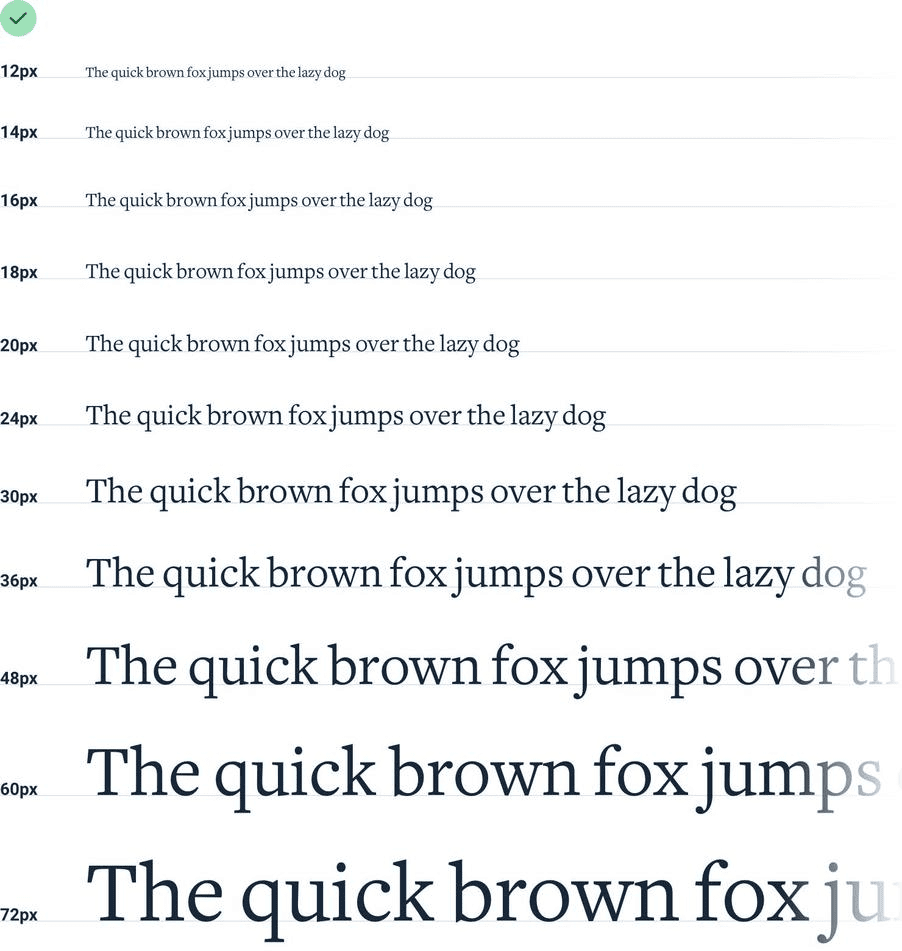
It’s constrained just enough to speed up your decision making, but isn’t so limited as to make you feel like you’re missing a useful size.
这个比例尺的限制恰到好处，既能加快你的决策过程，又不会让你感觉缺少了有用的尺寸。
Avoid em units / 避免使用 em 单位
When you’re building a type scale, don’t use em units to define your sizes.
在创建字体尺寸规范时，应避免使用 em 单位来指定字体大小。
Because em units are relative to the current font size, the computed font size of nested elements is often not actually a value in your scale.
em 单位描述的是相对于当前的字体大小，因此计算出的嵌套元素的字体大小可能并不在你设定的比例尺中。
For example, say you’ve defined an em-based type scale like this:
例如，如果你设定了一个基于 em 单位的字体尺寸规范：
If you give an element a font size of 1.25em (20px by default), inside of that element 1em is now equal to 20px. That means that if you give one of the nested elements a font size of .875em, the actual computed font size is 17.5px, not a value from your type scale!
假设你将某个元素的字体大小设为 1.25em（默认相当于 20px），那么在这个元素内部，1em 就等于 20px。这就意味着，如果你给其中一个嵌套元素设置 0.875em 的字体大小，实际的计算结果将是 17.5px，这个值并不在你的字体尺寸规范里！
Stick to px or rem units — it’s the only way to guarantee you’re actually sticking to the system.
坚持使用像素（px）或根 em（rem）单位 —— 这是确保你真正遵循所设定体系的唯一方式。
Use good fonts / 使用优质字体
With thousands of different typefaces out there to choose from, separating the good from the bad can be an intimidating task.
面对众多的字体选择，辨别哪些是好的字体可能是一项艰巨的任务。
Developing an eye for all of the details that make a good typeface can take years. You probably don’t have years, so here are a few tricks you can use to start picking out high quality typefaces right away.
要培养出识别优秀字体所有细节的眼光可能需要很多年。你可能没有那么多时间，所以这里有一些技巧，可以帮助你立即开始挑选高质量的字体。
Play it safe / 保守策略
For UI design, your safest bet is a fairly neutral sans-serif — think something like Helvetica.
在用户界面设计中，选择一种相对中性的无衬线字体是最稳妥的做法 —— 例如 Helvetica 字体。
If you really don’t trust your own taste, one great option is to rely on the system font stack:
如果你不太自信于自己的品味选择，一个有效的策略是使用系统默认的字体系列：
-apple-system, Segoe UI, Roboto, Noto Sans, Ubuntu, Cantarell, Helvetica Neue;
It might not be the most ambitious choice, but at least your users will already be used to seeing it.
虽然这可能不是最引人注目的选择，但至少用户对这些字体已经非常熟悉。
Ignore typefaces with less than five weights / 排除字重少于五种的字体
This isn’t always true, but as a general rule, typefaces that come in a lot of different weights tend to be crafted with more care and attention to detail than typefaces with fewer weights.
虽然这并不总是准确，但通常提供多种字重的字体在制作上更为精心，对细节的关注也更为周到。
Many font directories (like Google Fonts) will let you filter by “number of styles”, which is a combination of the available weights as well as the italic variations of those weights.
很多字体展示平台（例如 Google Fonts）允许你根据「样式数量」来过滤，这包括了各种字重及其相应的斜体样式。
A great way to limit the number of options you have to choose from is to crank that up to 10+ (to account for italics):
一个有效减少选择范围的技巧是将过滤条件设置为 10+（包含斜体样式）：
On Google Fonts specifically, that cuts out 85% of the available options, leaving you with less than 50 sans-serifs to choose from.
特别是在 Google Fonts 上，这种方法可以排除 85% 的选项，让你只有不到 50 种无衬线字体需要考虑。
Optimize for legibility / 优化可读性
When someone designs a font family, they are usually designing it for a specific purpose. Fonts meant for headlines usually have tighter letter- spacing and shorter lowercase letters (a shorter x-height), while fonts meant for smaller sizes have wider letter-spacing and taller lowercase letters.
设计字体系列时，设计师通常针对特定用途进行设计。例如，用于标题的字体往往具有更紧密的字母间距和小写字母较短（X 高度较短），而设计用于较小字号的字体则具有更宽的字母间距和小写字母较高。
译者注：X 高度（x-height）是字体设计中的一个术语，指的是小写字母（不包括字母 “y”）的平均高度。在字体的度量中，X 高度是一个重要的参考值，因为它对字体的可读性有显著影响。字体的 X 高度越高，小写字母相对于大写字母和数字就显得越大，这通常可以提高文本的可读性，尤其是在较小字号下。

Keep this in mind and avoid using condensed typefaces with short x-heights for your main UI text.
在选择字体时，请考虑这些因素，避免在用户界面的主要文本中使用紧凑且 X 高度较短的字体。
Trust the wisdom of the crowd / 相信群众的智慧
If a font is popular, it’s probably a good font. Most font directories will let you sort by popularity, so this can be a great way to limit your choices.
受欢迎的字体往往是优秀选择。大多数字体展示平台允许你根据流行度进行排序，这可以帮助你快速筛选出潜在的优质字体。
This is especially useful when you’re trying to pick out something other than a neutral UI typeface. Picking a nice serif with some personality for example can be tough.
当你需要挑选具有特定风格的字体，而不仅仅是中性的用户界面字体时，这个方法特别有效。比如，选择一个既有个性又美观的衬线字体可能具有挑战性。

Leveraging the collective decision-making power of thousands of other people can make it a lot easier.
借助成千上万人的共同选择，可以大大简化你的决策过程。
Steal from people who care / 向优秀的人学习
Inspect some of your favorite sites and see what typefaces they are using.
浏览一些你喜欢的网站，观察它们使用的字体类型。
There are a lot of great design teams out there full of people with really strong opinions about typography, and they’ll often choose great fonts that you might have never found using some of the safer approaches outlined above.
世界上有许多卓越的设计团队，团队成员对排版有着坚定的看法，他们往往会挑选出一些你可能通过上述更保守的方法从未发现的优秀字体。
Developing your intuition / 培养你的直觉
Once you start paying closer attention to the typography on well-designed sites, it’s not long before you feel pretty comfortable labeling a typeface as awesome or terrible.
当你开始更加细致地观察那些设计优秀的网站的排版时，你很快就会对判断一种字体是否出色或糟糕感到得心应手。
You’re gonna be a type snob soon enough, but the advice outlined above will help get you by in the meantime.
你很快将成为一个对字体有严格要求的人，但在那之前，上述的建议将为你提供帮助。
Keep your line length in check / 控制行长度
When styling paragraphs, it’s easy to make the mistake of fitting the text to your layout instead of trying to create the best reading experience.
在设计段落样式时，常见的错误是让文本适应页面布局，而不是优化阅读体验。
Usually this means lines that are too long, making text harder to read.
这通常导致行过长，影响文本的易读性。
For the best reading experience, make your paragraphs wide enough to fit between 45 and 75 characters per line. The easiest way to do this on the web is using em units, which are relative to the current font size. A width of 20-35em will get you in the right ballpark.
为了最佳的阅读体验，应调整段落宽度，确保每行大约有 45 到 75 个字符。在网页设计中，使用 em 单位（与当前字体大小相对应）是最简单的方法。设置宽度在 20 到 35em 之间，可以确保行宽适宜。

Going a bit wider than 75 characters per line can sometimes work too, but be aware that you’re entering risky territory — stick to the 45-75 range if you want to play it safe.
虽然每行超过 75 个字符在某些情况下也可行，但这可能降低阅读舒适度。为了安全起见，建议保持在 45 到 75 个字符的范围内。
Dealing with wider content / 应对宽内容的布局
If you’re mixing paragraph text with images or other large components, you should still limit the paragraph width even if the overall content area needs to be wider to accommodate the other elements.
当你在段落文本与图片或其他大型组件混合布局时，即使为了适应这些元素，整体内容区域需要加宽，你也应当控制段落文本的宽度。

It might seem counterintuitive at first to use different widths in the same content area, but the result almost always looks more polished.
虽然一开始在同一内容区域使用不同宽度的布局可能看起来不太自然，但这种设计方法几乎总能带来更加精细的外观。
Baseline, not center / 使用基线对齐，而非居中对齐
There are a lot of situations where it makes sense to use multiple font sizes to create hierarchy on a single line.
在许多情况下，为了在一行内创建视觉层级，使用不同大小的字体是合理的。
For example, maybe you’re designing a card that has a large title in the top left and a smaller list of actions in the top right.
比如，你可能在设计一个卡片，左上角有一个显眼的大标题，右上角是一组较小的操作项列表。
When you’re mixing font sizes like this, your instinct might be to vertically center the text for balance:
在混合使用不同字体大小时，人们可能会本能地将文本垂直居中对齐以求平衡：

When there’s a decent amount of space between the different font sizes it often won’t look bad enough to catch your attention, but when the text is close together the awkward alignment becomes more obvious:
当不同大小的字体之间空间充足时，这种对齐方式可能看起来还可以接受；但当文本紧密排列时，不自然的对齐方式就会变得明显。
A better approach is to align mixed font sizes by their baseline, which is the imaginary line that letters rest on:
一个更好的方法是根据字体的基线进行对齐，即字母所依托的那条假想线：
When you align mixed font sizes by their baseline, you’re taking advantage of an alignment reference that your eyes already perceive.
通过基线对齐不同大小的字体，你实际上是在使用一个我们的眼睛已经习惯的参照线进行对齐。
The result is a simpler, cleaner look than what you get when you center two pieces of text and offset their baselines.
这样做的结果是，与将两段文本居中对齐并使它们的基线错位相比，你将得到一个更简洁、更清晰的视觉效果。
Line-height is proportional / 行高应成比例调整
You might have heard the advice that a line-height of about 1.5 is a good starting point from a readability perspective.
常听到的建议是，从可读性角度出发，1.5 倍的行高是一个不错的起始点。

While that’s not necessarily untrue, choosing the right line-height for your text is a bit more complicated than just using the same value across the board in all situations.
然而，选择适合文本的行高并非简单地一概而论。需要考虑的因素包括行长度和字体大小。
Accounting for line length / 考虑行长度
The reason we add space between lines of text is to make it easy for the reader to find the next line when the text wraps. Have you ever accidentally read the same line of text twice, or accidentally skipped a line? The line- height was probably too short.
我们在文本行间留白，是为了帮助读者在文本换行时轻松找到下一行。如果你曾重复阅读同一行或不小心漏读一行，很可能是由于行高设置不足。
When lines of text are spaced too tightly, it’s easy to finish reading a line of text at the right edge of a page then jump your eyes all the way back to the left edge only to be unsure which line is next.
当文本行间距紧凑时，读者的视线在页面右侧结束阅读后，跳回左侧开始新一行，不容易确定下一行是哪一行。

This problem is magnified when lines of text are long. The further your eyes have to jump horizontally to read the next line, the easier it is to lose your place.
尤其是在长文本行中，这个问题会被放大。视线必须移动很远才能开始阅读下一行，就更容易在行间迷失。
That means that your line-height and paragraph width should be proportional — narrow content can use a shorter line-height like 1.5, but wide content might need a line-height as tall as 2.
因此，行高应与段落宽度成比例 —— 短文本可以使用 1.5 倍的行高，而长文本可能需要更高，如 2 倍行高。
Accounting for font size / 考虑字体大小
Line length isn’t the only factor in choosing the right line-height — font size has a big impact as well.
选择行高时，不仅要考虑行长，还要考虑字体大小的影响。
When text is small, extra line spacing is important because it makes it a lot easier for your eyes to find the next line when the text wraps.
小字体需要更大的行间距，以帮助视线在文本换行时更容易定位。

But as text gets larger, your eyes don’t need as much help. This means that for large headline text you might not need any extra line spacing, and a line- height of 1 is perfectly fine.
随着字体增大，视线定位的难度降低，大标题可能不需要额外的行间距，1 倍行高已足够。

Line-height and font size are inversely proportional — use a taller line-height for small text and a shorter line-height for large text.
总的来说，行高与字体大小呈反比关系 —— 小字体采用较高行高，大字体则可使用较低行高。
Not every link needs a color / 并非每个链接都需要颜色
When you’re including a link in a block of otherwise non-link text, it’s important to make sure that the link stands out and looks clickable.
在非链接文本块中加入链接时，重要的是要确保链接能够突出并显得可点击。
But when you’re designing an interface where almost everything is a link, using a treatment designed to make links “pop” in paragraph text can be really overbearing.
然而，在一个几乎所有元素都是链接的界面设计中，使用使链接在文本段落中「跳出来」的设计可能会让人感到过于强烈。
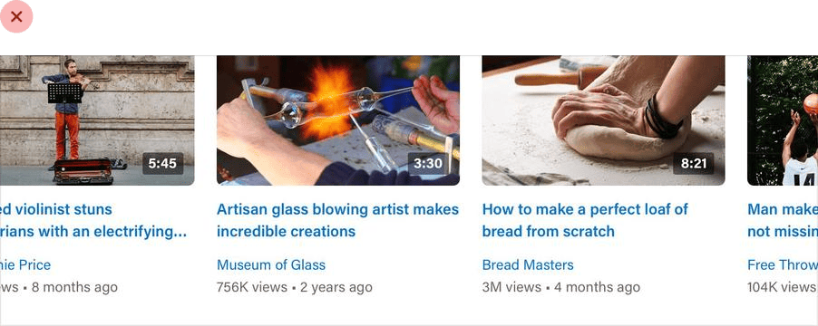
Instead, emphasize most links in a more subtle way, like by just using a heavier font weight or darker color.
取而代之的是，以更微妙的方式强调大多数链接，例如只使用更粗的字体或更深的颜色。

Some links might not even need to be emphasized by default at all. If you’ve got links in your interface that are really ancillary and not part of the main path a user takes through the application, consider adding an underline or changing the color only on hover.
有些链接默认情况下可能根本不需要强调。如果你的界面中有辅助性的链接，并且这些链接不是用户使用应用程序的主要路径的一部分，考虑仅在鼠标悬停时才添加下划线或改变颜色。

They’ll still be discoverable to any users who think to try, but won’t compete for attention with more important actions on the page.
这样，这些链接对于有意寻找的用户仍然是可发现的，但不会与页面上更重要的操作争夺注意力。
Align with readability in mind / 以可读性为目标进行对齐
In general, text should be aligned to match the direction of the language it’s written in. For English (and most other languages), that means that the vast majority of text should be left-aligned.
一般而言，文本的对齐方式应与其书写语言的方向一致。对于英语及大多数语言，这通常意味着大多数文本都应采取左对齐。

Other alignment options do have their place though, you just need to use them effectively.
尽管如此，其他对齐方式也有其适用的场合，关键在于要有效利用。
Don’t center long form text / 避免居中对齐长文本
Center-alignment can look great for headlines or short, independent blocks of text.
居中对齐适用于标题或短小独立的文本块，看起来效果佳。

But if something is longer than two or three lines, it will almost always look better left-aligned.
但如果文本超过两三行，左对齐通常会更美观。
If you’ve got a few blocks of text you want to center but one of them is a bit too long, the easiest fix is to rewrite the content and make it shorter:
如果你希望几段文本居中对齐，但某段过长，最简单的解决方法是重写并缩短内容：

Not only will it fix the alignment issue, it will make your design feel more consistent, too.
这不仅能解决对齐问题，还能让你的设计更加统一。
Right-align numbers / 数字右对齐
If you’re designing a table that includes numbers, right-align them.
在设计包含数字的表格时，应将数字右对齐。
When the decimal in a list of numbers is always in the same place, they’re a lot easier to compare at a glance.
当数字列表中的小数点位置固定时，它们将更易于快速比较。
Hyphenate justified text / 两端对齐文本使用连字符
Justified text looks great in print and can work well on the web when you’re going for a more formal look, but without special care, it can create a lot of awkward gaps between words:
两端对齐的文本在印刷品中表现出色，并且在追求更正式外观的网页设计中也能发挥作用，但若不经特殊处理，可能会在单词间产生不自然的空隙：
To avoid this, whenever you justify text, you should also enable hyphenation:
要避免这种情况，当文本两端对齐时，应同时启用连字符功能：

Justified text works best in situations where you’re trying to mimic a print look, perhaps for an online magazine or newspaper. Even then, left aligned text works great too, so it’s really just a matter of preference.
两端对齐的文本最适合于模仿印刷品外观的场合，如在线杂志或报纸。即便如此，左对齐文本同样表现出色，因此这更多是个人偏好的选择。
Use letter-spacing effectively / 有效使用字间距
When styling text, a lot of effort is put into getting the weight, color, and line- height just right, but it’s easy to forget that letter-spacing can be tweaked, too.
在设计文本样式时，我们通常会花费很多精力调整字体粗细、颜色和行高，但有时会忽略字间距的调整。

As a general rule, you should trust the typeface designer and leave letter-spacing alone. That said, there are a couple of common situations where adjusting it can improve your designs.
一般而言，我们应该信任字体设计师的设计，不改变字间距。尽管如此，有几种常见情况通过调整字间距可以提升设计效果。
Tightening headlines / 压缩标题的字间距
When someone designs a font family, they design it with a purpose in mind.
设计字体系列时，设计师会考虑特定的使用目的。
A family like Open Sans is designed to be highly legible even at small sizes, so the built-in letter-spacing is a lot wider than a family like Oswald which is designed for headlines.
例如，Open Sans 字体设计用于在小尺寸下也能保持高度可读性，因此其字间距相对较宽；而 Oswald 字体则是为标题设计的，其字间距更紧凑。

If you want to use a family with wider letter-spacing for headlines or titles, it can often make sense to decrease the letter-spacing to mimic the condensed look of a purpose-built headline family:
如果你想使用字间距较宽的字体系列做标题，通常可以减少字间距，以模拟专为标题设计的紧凑字体的外观：

Avoid trying to make this work the other way around though — headline fonts rarely work well at small sizes even if you increase the letter spacing.
但不要试图反向操作 —— 即使增加字间距，专为标题设计的字体在小尺寸下也很少能表现良好。
Improving all-caps legibility / 提高全大写易读性
The letter-spacing in most font families is optimized for normal “sentence case” text — a capital letter followed by mostly lowercase letters.
大多数字体系列的字间距是为通常的「句子格式」文本优化的 —— 即一个单词首字母大写后跟小写字母。
Lowercase letters have a lot of variety visually. Letters like n, v, and e fit entirely within a typeface’s x-height, other letters like y, g, and p have descenders that poke out below the baseline, and letters like b, f, and t have ascenders that extend above.
小写字母在视觉上具有多样性。例如，字母 n、v 和 e 完全适应字体的 X 高度，而像 y、g 和 p 这样的字母有延伸到基线以下的部件，b、f 和 t 等字母则有延伸到基线上面的部件。

All-caps text on the other hand isn’t so diverse. Since every letter is the same height, using the default letter-spacing often leads to text that is harder to read because there are fewer distinguishing characteristics between letters.
而全大写字母则缺乏这种多样性，因为所有字母高度一致，使用默认字间距可能会导致文本阅读起来更困难，因为字母之间的区别性减少。
For that reason, it often makes sense to increase the letter-spacing of all- caps text to improve readability:
因此，通常增加全大写字母的字间距有助于提高其可读性：

Working with Color / 运用色彩
Ditch hex for HSL / 放弃 Hex，选择 HSL
Hex and RGB are the most common formats for representing color on the web, but they’re not the most useful.
十六进制（Hex）和 RGB 是网络中表示颜色的常见格式，但它们并不是最实用的选择。
Using hex or RGB, colors that have a lot in common visually look nothing alike in code.
使用十六进制或 RGB 时，视觉上相似的颜色在代码中可能看起来完全不同。

HSL fixes this by representing colors using attributes the human-eye intuitively perceives: hue, saturation, and lightness.
HSL 通过人类直观感知的色彩属性来表示颜色：色相、饱和度和亮度。
Hue is a color’s position on the color wheel — it’s the attribute of a color that lets us identify two colors as “blue” even if they aren’t identical.
色相指的是颜色在色轮上的定位，这种属性使我们能够在两种颜色并非完全一致的情况下，依然将它们归类为「蓝色」。

Hue is measured in degrees, where 0° is red, 120° is green, and 240° is blue.
色相用度数表示，0° 代表红色，120° 代表绿色，240° 代表蓝色。
Saturation is how colorful or vivid a color looks. 0% saturation is grey (no color), and 100% saturation is vibrant and intense.
饱和度描述颜色的鲜艳程度。0% 的饱和度是灰色，没有色彩感，而 100% 的饱和度则非常鲜艳和强烈。

Without saturation, hue is irrelevant — rotating the hue when saturation is 0% doesn’t actually change the color at all.
没有饱和度，色相就无从谈起 —— 饱和度为 0% 时，色相的旋转不会改变颜色。

Lightness is just what it sounds like — it measures how close a color is to black or to white. 0% lightness is pure black, 100% lightness is pure white, and 50% lightness is a pure color at the given hue.
亮度顾名思义，它衡量颜色与黑色或白色的接近程度。0% 亮度是纯黑色，100% 亮度是纯白色，而 50% 亮度则表示在特定色相下的纯色。

HSL vs. HSB / HSL 与 HSB 的区别
Don’t confuse HSL for HSB — lightness in HSL is not the same as brightness in HSB.
不要把 HSL 和 HSB 混淆。HSL 中的亮度与 HSB 中的亮度不是同一个概念。
In HSB, 0% brightness is always black, but 100% brightness is only white when the saturation is 0%. When saturation is 100%, 100% brightness in HSB is the same as 100% saturation and 50% lightness in HSL.
在 HSB 模式中，0% 亮度总是黑色，而在饱和度为 0% 时，100% 亮度是白色。当饱和度为 100% 时，HSB 中的 100% 亮度等同于 HSL 中的 100% 饱和度和 50% 亮度。

HSB is more common than HSL in design software, but browsers only understand HSL, so if you’re designing for the web, HSL should be your weapon of choice.
虽然 HSB 在设计软件中更常见，但浏览器只接受 HSL，所以如果你在为网页设计，HSL 应该是你的首选。
You need more colors than you think / 你所需的颜色比你认为的要多
Ever used one of those color palette generators where you pick a starting color, tweak some options, and are then bestowed the five perfect colors you should use to build your website?
你是否尝试过那种颜色调色板生成器，你选定一个基础色，调整几个选项，然后生成器就会为你提供五种完美的颜色，告诉你应该用它们来构建你的网站？
This calculated approach to picking the perfect color scheme is extremely seductive, but it’s not very useful unless you want your site to look like this:
这种计算出的颜色方案选择方法非常吸引人，但除非你想让你的网站看起来千篇一律：

What you actually need / 你实际需要的
You can’t build anything with five hex codes. To build something real, you need a much more comprehensive set of colors to choose from.
仅有五个十六进制颜色代码是不够的。要构建真实的设计，你需要更全面的颜色选择范围。

You can break a good color palette down into three categories.
一个好的颜色调色板可以分为三个主要类别。
Greys / 灰色系
Text, backgrounds, panels, form controls — almost everything in an interface is grey.
文本、背景、面板、表单控件 —— 界面中的几乎所有元素都是灰色的。
You’ll need more greys than you think, too — three or four shades might sound like plenty but it won’t be long before you wish you had something a little darker than shade #2 but a little lighter than shade #3.
你可能需要比你想象的更多的灰色调 —— 三到四种可能看起来足够，但很快你就会需要比 #2 色调稍深一点但是比 #3 色调稍浅一点的颜色。
In practice, you want 8-10 shades to choose from (more on this in “Define your shades up front”). Not so many that you waste time deciding between shade #77 and shade #78, but enough to make sure you don’t have to compromise too much.
实际上，你应该从一种非常深的灰色开始，逐步过渡到白色，并有 8 到 10 种色调可供选择（更多细节见「预先确定色调」）。这样既不会太多以至于在选择色调时浪费时间，也足以保证你不必做出太多妥协。
True black tends to look pretty unnatural, so start with a really dark grey and work your way up to white in steady increments.
纯黑色看起来往往不自然，所以应该从一种非常深的灰色开始，逐步过渡到白色。
Primary color(s) / 主要色
Most sites need one, maybe two colors that are used for primary actions, active navigation elements, etc. These are the colors that determine the overall look of a site — the ones that make you think of Facebook as “blue”.
大多数网站通常需要一种，或者可能最多两种颜色，用于主要操作、活动的导航元素等。这些颜色决定了网站的整体外观 —— 比如 Facebook 的「蓝色」。
Just like with greys, you need a variety (5-10) of lighter and darker shades to choose from.
和灰色一样，你需要 5 到 10 种不同深浅的色调可供选择。
Ultra-light shades can be useful as a tinted background for things like alerts, while darker shades work great for text.
最浅的色调可以用作提醒等元素的着色背景，而最深的色调适合用于文本。
Accent colors / 强调色
On top of primary colors, every site needs a few accent colors for communicating different things to the user.
除了主颜色外，每个网站还需要一些强调色来向用户传达不同的信息。
For example, you might want to use an eye-grabbing color like yellow, pink, or teal to highlight a new feature:
例如，你可能想用黄色、粉色或蓝绿色等醒目的颜色来突出新功能：
You might also need colors to emphasize different semantic states, like red for confirming a destructive action:
你可能还需要用颜色来强调不同的语义状态，如用红色来确认破坏性操作：
…yellow for a warning message:
用黄色表示警告信息：
…or green to highlight a positive trend:
或者用绿色突出积极的趋势：
You’ll want multiple shades for these colors too, even though they should be used pretty sparingly throughout the UI.
即使对于这些颜色，你也需要有多种深浅变化，尽管它们在 UI 中的使用应该相当节制。
If you’re building something where you need to use color to distinguish or categorize similar elements (like lines on graphs, events in a calendar, or tags on a project), you might need even more accent colors.
如果你正在构建需要用颜色来区分或分类相似元素的设计（例如图表中的线条、日历中的事件或项目中的标签），你可能需要更多的强调色。
All in, it’s not uncommon to need as many as ten different colors with 5-10 shades each for a complex UI.
总的来说，对于一个复杂的用户界面，拥有多达十种不同的颜色，每种颜色有 5 到 10 种不同的深浅变化，这是很常见的。
Define your shades up front / 预先确定色调
When you need to create a lighter or darker variation of a color in your palette, don’t get clever using CSS preprocessor functions like “lighten” or “darken” to create shades on the fly. That’s how you end up with 35 slightly different blues that all look the same.
在为你的调色板创建颜色的深浅变化时，不要使用 CSS 预处理器的「变亮」或「变暗」等函数来即时生成色调。这样做可能会导致你得到许多几乎无法区分的蓝色调。
Instead, define a fixed set of shades up front that you can choose from as you work.
相反，你应该一开始就定义一套固定的色调供工作时选择。
So how do you put together a palette like this anyways?
那么，如何构建这样的调色板呢？
Choose the base color first / 首先选择基础色调
Start by picking a base color for the scale you want to create — the color in the middle that your lighter and darker shades are based on.
首先，为你想要创建的色阶选择一个基础色调 —— 你的浅色和深色都是基于这个中间色调。
There’s no real scientific way to do this, but for primary and accent colors, a good rule of thumb is to pick a shade that would work well as a button background.
选择基础色调没有严格的科学方法，但对于主要色和强调色，一个好的经验是选择一个适合作为按钮背景的色调。
It’s important to note that there are no real rules here like “start at 50% lightness” or anything — every color behaves a bit differently, so you’ll have to rely on your eyes for this one.
需要注意的是，这里没有固定规则，比如「从 50% 亮度开始」，因为每种颜色的表现都有所不同，所以你需要依靠你的视觉判断。
Finding the edges / 确定色阶的端点
Next, pick your darkest shade and your lightest shade. There’s no real science to this either, but it helps to think about where they will be used and choose them using that context.
接下来，选择最深色和最浅色。这个过程也没有固定规则，但考虑它们将如何使用，并根据这个场景来选择它们。
The darkest shade of a color is usually reserved for text, while the lightest shade might be used to tint the background of an element.
通常，颜色的最深色用于文本，而最浅色可能用于元素背景的轻微着色。
A simple alert component is a good example that combines both of these use cases, so it can be a great place to pick these colors.
例如，一个简单的警告组件可能同时使用这两种色调，这可以是选择这些颜色的好起点。
Start with a color that matches the hue of your base color, and adjust the saturation and lightness until you’re satisfied.
从与基础色相相匹配的颜色开始，调整饱和度和亮度直到你满意。
Filling in the gaps / 填补中间的空隙
Once you’ve got your base, darkest, and lightest shades, you just need to fill in the gaps in between them.
确定了基础色、最深色和最浅色之后，你只需要在它们之间填补空隙。
For most projects, you’ll need at least 5 shades per color, and probably closer to 10 if you don’t want to feel too constrained.
对于大多数项目，每种颜色至少需要 5 个色调，如果想要更自由一些，可能需要接近 10 个。
Nine is a great number because it’s easy to divide and makes filling in the gaps a little more straightforward. Let’s call our darkest shade 900, our base shade 500, and our lightest shade 100.
9 是一个理想的数字，因为它易于分割，使得填补空隙更加直接。假设我们将最深色定义为 900，基础色为 500，最浅色为 100。
Start by picking shades 700 and 300, the ones right in the middle of the gaps. You want these shades to feel like the perfect compromise between the shades on either side.
首先选择 700 和 300 这两个中间的色调，这些色调应该是两侧色调的完美折中。
This creates four more holes in the scale (800, 600, 400, and 200), which you can fill using the same approach.
这样，你就为色阶上的 800、600、400 和 200 留下了更多的空间，可以用相同的方法填补。
You should end up with a pretty balanced set of colors that provide just enough options to accommodate your design ideas without feeling limiting.
最终，你会得到一套平衡的颜色组合，为你的设计提供足够的选择，而不会感觉受限。
What about greys? / 灰色如何处理？
With greys the base color isn’t as important, but otherwise the process is the same. Start at the edges and fill in the gaps until you have what you need.
对于灰色，基础色不是那么关键，但构建过程是相同的。从端点开始，填补空隙，直到你得到所需。
Pick your darkest grey by choosing a color for the darkest text in your project, and your lightest grey by choosing something that works well for a subtle off-white background.
选择最深色灰色，可以作为项目中最深色文本的颜色，选择最浅色灰色，可以作为微妙的灰白色背景。
It’s not a science / 这不是一门精确科学
As tempting as it is, you can’t rely purely on math to craft the perfect color palette.
尽管很诱人，但你不能完全依赖数学来创建完美的调色板。
A systematic approach like the one described above is great to get you started, but don’t be afraid to make little tweaks if you need to.
像前文描述的体系化方法对于开始构建调色板很有帮助，但如果需要，不要害怕进行微调。
Once you actually start using your colors in your designs, it’s almost inevitable that you’ll want to tweak the saturation on a shade, or make a couple of shades lighter or darker. Trust your eyes, not the numbers.
当你开始在设计中实际使用这些颜色时，几乎可以肯定会想要调整某个色调的饱和度，或者让几个色调变得更亮或更暗。相信的你的眼睛，而不是数字。
Just try to avoid adding new shades too often if you can avoid it. If you’re not diligent about limiting your palette, you might as well have no color system at all.
只是尽量避免频繁添加新色调。如果你不严格限制你的调色板，那拥有颜色体系就毫无意义。
Don’t let lightness kill your saturation / 避免亮度影响饱和度
In the HSL color space, as a color gets closer to 0% or 100% lightness, the impact of saturation is weakened — the same saturation value at 50% lightness looks more colorful than it does at 90% lightness.
在 HSL 色彩模式中，颜色的亮度若接近 0% 或 100% 时，饱和度的效果会减弱 —— 即使饱和度值相同，在 50% 亮度下看起来会比在 90% 亮度下更显彩色。
That means that if you don’t want the lighter and darker shades of a given color to look washed out, you need to increase the saturation as the lightness gets further away from 50%.
这表示，如果你不希望某个颜色的深浅变化看起来褪色，就需要随着亮度的增减相应提高饱和度。
It’s subtle but little details like this add up, especially when a color is being applied to a large section of a UI.
这种细微差别虽然不易察觉，但累积起来，尤其是在大面积应用颜色的 UI 设计中，会有很大影响。
But what if your base color is already heavily saturated? How do you increase the saturation if it’s already at 100%?
如果你的基础色已经非常饱和，达到 100%，那该怎么办？
Use perceived brightness to your advantage / 利用感知亮度的优势
Which of these two colors do you think is lighter?
你认为这两种颜色中，哪一种更亮？
The yellow, right? Well it turns out both colors actually have the exact same “lightness” in terms of HSL:
是黄色，对吧？实际上，这两种颜色在 HSL 色彩模式中的亮度是相同的。
So why do we see the yellow as lighter? Well it turns out that every hue has an inherent perceived brightness due to how the human eye perceives color.
那为什么我们会感觉黄色更亮呢？这是因为人眼对不同色相有固有的感知亮度。
You can calculate the perceived brightness of a color by plugging its RGB components into this formula:
你可以通过一个公式，将颜色的 RGB 值代入，来计算其感知亮度。
Taking samples of different hues with 100% saturation and 50% lightness, we can get a good sense of the perceived brightness of different colors around the color wheel:
选取不同色相 100% 饱和度和 50% 亮度的样本，我们可以了解到色轮上不同颜色的感知亮度。
As expected, yellow has a higher perceived brightness than blue. But what’s interesting here is that perceived brightness doesn’t simply change linearly from the darkest hue to the lightest hue — instead, there are three separate local minimums (red, green, and blue) and three local maximums (yellow, cyan, and magenta).
正如预期，黄色的感知亮度高于蓝色。有趣的是，感知亮度并非从最暗色相到最亮色相线性变化，而是有三个局部最小值（红色、绿色和蓝色）和三个局部最大值（黄色、青色和品红色）。
Changing brightness by rotating hue / 通过调整色相改变亮度
On the surface, this is certainly an interesting thing to understand about color. But things get really interesting when you realize how you can use this knowledge in your designs.
这在理论上是一个有趣的发现，但当你意识到可以如何在设计中应用这一知识时，它就变得更有趣了。
Normally when you want to change how light a color looks, you adjust the lightness component:
通常，如果你想改变颜色的亮度，你会调整其亮度成分。
While this does work to lighten or darken a color, you often lose some of the color’s intensity — the color also looks closer to white or to black, not just lighter or darker.
这种方法虽然有效，但可能会牺牲颜色的强度 —— 颜色看起来会更接近白色或黑色，而不仅仅是变亮或变暗。
Since different hues have a different perceived brightness, another way you can change the brightness of a color is by rotating its hue.
由于不同色相的感知亮度不同，你也可以通过旋转色相来改变颜色的亮度。
To make a color lighter, rotate the hue towards the nearest bright hue — 60°, 180°, or 300°.
要使颜色看起来更亮，将其色相向最近的亮色相（60°、180° 或 300°）调整。
To make a color darker, rotate the hue towards the nearest dark hue — 0°, 120°, or 240°.
要使颜色看起来更暗，将其色相向最近的暗色相（0°、120° 或 240°）调整。
This can be really useful when trying to create a palette for a light color like yellow. By gradually rotating the hue towards more of an orange as you decrease the lightness, the darker shades will feel warm and rich instead of dull and brown:
这在为像黄色这样的浅色创建调色板时非常有用。通过逐渐将色相调整为更偏向橙色，同时降低亮度，较暗的色相会显得更加温暖和丰富，而不是单调和棕色。
You can of course combine these approaches too, getting some of the brightness by adjusting the hue and some from adjusting the lightness.
当然，你也可以结合这两种方法，通过调整色相和亮度来获得所需的亮度。
While this is a great way to change a color’s brightness without affecting its intensity, it works best in small doses. Don’t rotate the hue more than 20-30° or it will look like a totally different color instead of just lighter or darker.
虽然这是一种在不影响颜色强度的情况下改变颜色亮度的有效方法，但应适度使用。避免将色相旋转超过 20~30°，否则颜色可能会看起来完全不同，而不仅仅是简单的变亮或变暗。
Greys don’t have to be grey / 灰色也可以有色彩
By definition, true grey has a saturation of 0% — it doesn’t have any actual color in it at all.
按照定义，纯灰色的饱和度为0%，它不包含任何颜色成分。
But in practice, a lot of the colors that we think of as grey are actually saturated quite heavily:
但在实践中，许多我们认为是灰色的颜色实际上具有相当高的饱和度：
This saturation is what makes some greys feel cool and other greys feel warm.
正是这种饱和度让某些灰色带有凉爽感，而另一些灰色则带有温暖感。
Color temperature / 色温的概念
If you’ve ever purchased light bulbs before, you’ve had to make the decision between “warm white” bulbs that give off a yellow-ish light, and “cool white” bulbs that give off a blue-ish light.
如果你曾经购买过灯泡，你可能需要在发出偏黄光的「暖白光」灯泡和发出偏蓝光的「冷白光」灯泡之间做出选择。
Saturating greys in a user interface works in a similar same way.
在用户界面设计中，对灰色进行饱和处理的原理相似。
If you want your greys to feel cool, saturate them with a bit of blue:
如果你想让灰色显得更冷，可以添加一些蓝色的饱和：
To give your greys a warmer feel, saturate them with a bit of yellow or orange:
要让灰色显得更温暖，可以添加一些黄色或橙色的饱和：
To maintain a consistent temperature, don’t forget to increase the saturation for the lighter and darker shades. If you don’t, those shades will look a bit washed out compared to the greys that are closer to 50% lightness.
为了维持一致的色温，记得为较亮或较暗的灰色调也增加饱和度。如果不这样做，与接近 50% 亮度的灰色相比，这些色调可能会显得有些褪色。
How much you want to saturate your greys is completely up to you — add just a little if you only want to tip the temperature slightly, or crank it up if you want the interface to lean strongly in one direction or the other.
你对灰色的饱和度调整程度完全取决于你自己的偏好 —— 如果你只想轻微调整色温，可以只添加少量饱和；如果你希望界面明显倾向于冷或暖色调，可以适当增加饱和度。
Accessible doesn’t have to mean ugly / 易用性不必以牺牲美观为代价
To make sure your designs are accessible, the Web Content Accessibility Guidelines (WCAG) recommend that normal text (under ~18px) has a contrast ratio of at least 4.5:1, and that larger text has a contrast ratio of at least 3:1.
根据网络内容无障碍指南（WCAG），为确保设计易于访问，建议对小于约 18px 的普通文本保持至少 4.5:1 的对比度，对较大文本保持至少 3:1 的对比度。
For typical dark-text-on-a-light-background situations, meeting this recommendation is pretty easy, but it gets a lot trickier when you start working with color.
在深色文字在浅色背景上的常见情况下，达到这些建议标准相对容易，但在涉及彩色设计时，挑战就会增加。
Flipping the contrast / 对比度反转
When using white text on a colored background, you’d be surprised how dark the color often needs to be to meet that 4.5:1 contrast ratio.
在彩色背景上使用白色文字时，你可能会发现要满足 4.5:1 的对比度标准，背景颜色往往需要非常深。
This can create hierarchy issues when those elements aren’t supposed to be the focus of the page — dark colored backgrounds will really grab the user’s attention.
这可能会导致层级上的混淆，尤其是当这些元素并非页面的焦点时 —— 深色背景会特别吸引用户的注意力。
You can solve this problem by flipping the contrast. Instead of using light text on a dark colored background, use dark colored text on a light colored background:
解决这个问题的方法是反转对比度。与其在深色背景上使用浅色文字，不如在浅色背景上使用深色文字：
The color is still there to help support the text, but it’s way less in-your-face and doesn’t interfere as much with other actions on the page.
颜色依然有助于支持文字的可读性，但更加低调，不会过多干扰页面上的其他操作。
Rotating the hue / 旋转色相
Even harder than white text on a colored background is colored text on a colored background. You’ll run into this situation if you’re ever trying to pick a color for some secondary text inside a dark-colored panel.
比在彩色背景上使用白色文字更具挑战性的是在彩色背景上使用彩色文字。这种情况可能发生在为深色面板内的次要文本选择颜色时。
If you start by taking the background color and simply adjusting the lightness and saturation, you’ll find that it’s hard to meet the recommended contrast ratio without getting very close to pure white.
如果你只是调整背景色的色彩亮度和饱和度，会发现很难在不接近纯白色的情况下达到推荐的对比度。
You don’t want the primary text and the secondary text to look the same, so what else can you do?
你不希望次要文本和主要文本看起来没有区别，那还能怎么做呢？
Well since some colors are brighter than others, one way to increase the contrast without getting closer to white is to rotate the hue towards a brighter color, like cyan, magenta, or yellow.
既然某些颜色天生比其他颜色更明亮，一种在不趋向白色的情况下提高对比度的方法就旋转色相向更明亮的颜色，比如青色、品红或黄色。
This can make it a lot easier to make the text accessible while still keeping it colorful.
这可以使文本在保持多彩的同时，也更容易阅读。
Don’t rely on color alone / 避免完全依赖颜色
Color can be a fantastic way to enhance information and make it easier to understand, but be careful not to rely on it, or users with color blindness will have a hard time interpreting your UI.
颜色是提升信息传递清晰度和易理解性的绝佳工具，但应避免完全依赖颜色，以免色盲用户难以理解用户界面。
Take these metric cards for example. With this design, someone who is red- green colorblind can’t easily tell if a metric has gotten better or worse:
以一组指标卡片为例。按照当前的设计，红绿色盲用户可能难以快速判断某个指标的表现是提升还是下降：

An easy fix for this is to also communicate that information in some other way, like by adding icons to indicate if the change is positive or negative.
解决这个问题的一个简单方法是通过其他方式传达这一信息，例如添加表示变化性质的图标。
What about something like a graph, where each trend line has a different color?
在面对图表等元素时，其中每条趋势线采用不同颜色表示，又该如何处理呢？
In situations like this, try relying on contrast instead of using completely different colors. It’s much easier for someone who’s colorblind to tell the difference between light and dark than it is for them to tell the difference between two distinct colors.
在这种情况下，应尽量依赖对比度而非完全不同的颜色。色盲用户更容易区分不同亮度的颜色，而不是两种截然不同的颜色。
Always use color to support something that your design is already saying; never use it as the only means of communication.
始终将颜色用作支持设计中已有信息的辅助手段，而不要将其作为唯一的信息传递方式。
Creating Depth / 创建深度效果
Emulate a light source / 模拟光源
Have you ever noticed how some elements in an interface feel like they’re raised off of the page, while others feel like they are inset into the background?
你可曾留意，界面中的某些元素似乎从页面上突出，而另一些则似乎嵌入背景之中？
Creating this effect might look complicated at first, but it actually only requires you to understand one fundamental rule.
虽然这种效果起初看起来复杂，但其实只需掌握一个基本原则即可实现。
Light comes from above / 光线总是从上方来
Take a look at the panelling on this door:
观察这扇门上的嵌板图案：
Even though you’re just looking at a flat image, it’s still pretty obvious that the panels on the door are raised. Why is that?
尽管你看到的只是一个平面图像，门上的嵌板看起来显然是突出的。这是为什么呢？
Notice how the top edge of the panel is lighter? That’s because it’s angled towards the sky and receives more light. Similarly, the bottom edge is darker because it’s angled away from the sky, receiving less light.
注意看嵌板的上边缘更亮，这是因为它朝向天空，接收了更多的光线。相对应的，下边缘较暗，因为它朝向远离天空的方向，接收到的光线较少。
The only way those edges could possibly be oriented that way is if the panel itself is raised, so that’s how our brains perceive it.
这种边缘的明暗分布唯一合理的解释就是嵌板本身是突出的，这也是我们大脑的感知方式。
Now take a look at the panelling on this cabinet:
再来看这个橱柜上的嵌板：
In this case it’s clear that the panels are inset because there’s a shadow at the top indicating that the lip above is blocking the light, and the bottom edge is lighter, indicating that it’s angled upward.
这个例子中很明显嵌板是嵌入的，因为顶部有阴影，表明上方的边缘阻挡了光线，而下边缘较亮，表明它向上倾斜。
To create this same sense of depth in your designs, all you need to do is mimic the way light affects things in the real world.
要在你设计中营造类似的深度感，你只需模仿现实世界中光线如何影响物体。
Simulating light in a user interface / 在用户界面中模拟光线效果
If you want an element to appear raised or inset, first figure out what profile you want that element to have, then mimic how a light source would interact with that shape.
如果你想让某个元素看起来是凸起或嵌入的，首先要确定你希望该元素呈现出怎样的轮廓，然后模拟光源与该形状的相互作用。
Raised elements / 创建凸起效果
For example, say you had a button and you wanted it to feel raised off of the page, with perfectly flat edges on the top and bottom:
想象你正在设计一个按钮，你希望它看起来像是从页面上凸起，拥有完全平坦的上下边缘。
Because the top and bottom edges are both flat, it would be impossible to see both of them at the same time. People generally look slightly downward towards their screens, so for the most natural look, reveal a little bit of the top edge and hide the bottom edge.
因为顶部和底部边缘都是平的，不可能同时看到它们。且人们倾向于从上向下看屏幕，为了让按钮呈现出最自然的外观，应展示其上边缘的一部分，同时隐藏下边缘。
Since the top edge is facing upward, make it slightly lighter than the face of the button, usually using a top border or an inset box shadow with a slight vertical offset:
由于上边缘面向观察者，应使其颜色比按钮表面稍亮。这可以通过添加顶部边框或设置轻微垂直偏移的内嵌阴影来实现：
Choose the lighter color by hand instead of using a semi-transparent white for best results — simply overlaying white can suck the saturation out of the underlying color.
选择亮色时，应手动挑选，避免使用半透明白色，因为这可能会降低底层颜色的饱和度。
Next, you need to account for the fact that a raised element will block some of the light from reaching the area below the element.
此外，凸起的元素会在其下方形成阴影，阻挡部分光线。
Do this by adding a small dark box shadow with a slight vertical offset (you only want the shadow to appear below the element):
这可以通过在元素下方添加轻微垂直偏移的暗色盒阴影来模拟。
Don’t get carried away with the blur radius, a couple of pixels is plenty. These sorts of shadows should have pretty sharp edges — take a look at the shadow cast by the bottom of a wall outlet or window frame for a real-world example.
阴影的模糊半径不宜过大，轻微模糊即可，边缘应保持清晰，以模拟现实世界中物体的阴影效果。
Inset elements /
Say you’re designing a “well” component that should feel like it’s recessed into the page.
Looking slightly downward, only the bottom lip would be visible. Since it’s facing towards the sky, give that edge a slightly lighter color using a bottom border or inset shadow with a negative vertical offset:
The area above the well should block some of the light from reaching the very top of the well, so add a small dark inset box shadow with a slight positive vertical offset to make sure it doesn’t poke through at the bottom:
This same treatment works for any element that may need to appear inset, for example text inputs and checkboxes:
Don’t get carried away /
Once you understand how to simulate light in an interface, it can be tempting to tinker away for hours, tweaking and tweaking to see how closely you can mimic the real world.
While this can be a fun exercise, in practice it can lead to interfaces that are busy and unclear. Borrowing some visual cues from the real world is a great way to add a bit of depth, but there’s no need to try and make things look photo-realistic.
Use shadows to convey elevation /
Shadows can be more than just a flashy effect — used thoughtfully, they let you position elements on a virtual z-axis to create a meaningful sense of depth.
Small shadows with a tight blur radius make an element feel only slightly raised off of the background, while larger shadows with a higher blur radius make an element feel much closer to the user:
The closer something feels to the user, the more it will attract their focus.
You might use a smaller shadow for something like a button, where you want the user to notice it but don’t want it to dominate the page:
Medium shadows are useful for things like dropdowns; elements that need to sit a bit further above the rest of the UI:

Large shadows are great for modal dialogs, where you really want to capture the user’s attention:
Establishing an elevation system /
Just like with color, typography, spacing, and sizing, defining a fixed set of shadows will speed up your workflow and help maintain consistency in your designs.
You don’t need a ton of different shadows — five options is usually plenty.
Start by defining your smallest shadow and your largest shadow, then fill in the middle with shadows that increase in size pretty linearly:
Combining shadows with interaction /
Shadows aren’t only useful for positioning elements on the z-axis statically; they’re a great way to provide visual cues to the user as they interact with elements, too.
For example, say you had a list of items where the user could click and drag each item to sort them. Adding a shadow to an item when a user clicks it makes it feel like it pops forward above the other items in the list, and makes it clear to the user that they can drag it:
Similarly, you can make a button feel like it’s being pressed into the page when a user clicks it by switching to a smaller shadow, or perhaps removing the shadow altogether:
Using shadows in a meaningful way like this is a great way to hack the process of choosing what sort of shadow an element should have. Don’t think about the shadow itself, think about where you want the element to sit on the z-axis and assign it a shadow accordingly.
Shadows can have two parts /
Ever inspected a really nice shadow on a site and noticed they were actually using two shadows?
There’s a method to this madness, and it’s actually pretty simple and makes a lot of sense.
When you see someone combining two shadows, they’re not just experimenting randomly until things look nice, they’re using each shadow to do a specific job.
The first shadow is larger and softer, with a considerable vertical offset and large blur radius. It simulates the shadow cast behind an object by a direct light source.

The second shadow is tighter and darker, with less of a vertical offset and a smaller blur radius. It simulates the shadowed area underneath an object where even ambient light has a hard time reaching.
Using two shadows like this gives you a lot more control than you’d get with a single shadow — you can keep the larger shadow nice and subtle while still making the shadow closer the element’s edges nice and defined.
Accounting for elevation /
As an object gets further away from a surface, the small, dark shadow created by a lack of ambient light slowly disappears (go ahead, try it out with something on your desk).
So if you’re going to use this two-shadow technique in your own projects, make sure you make that shadow more subtle for shadows that represent a higher elevation.
It should be quite distinct for your lowest elevation, and almost (or completely) invisible at your highest elevation.
Even flat designs can have depth /
When most people talk about “flat design”, they mean designing without shadows, gradients, or any other effects that try to mimic how light interacts with things in the real-world.
But the most effective flat designs still convey depth, they just do it in a different way.
Creating depth with color /
In general (especially with shades of the same color), lighter objects feel closer to us and darker objects feel further away.
Make an element lighter than the background color to make it feel like it’s raised off of the page, or darker than the background color if you want it to feel inset like a well:
This is just as applicable to non-flat designs, too — color is just another tool in your toolbelt for conveying distance.
Using solid shadows /
Another way to communicate depth in a flat design is to use short, vertically offset shadows with no blur radius at all.
It’s a great way to make a card or button stand off the page a little bit without sacrificing that flat aesthetic.
Overlap elements to create layers /
One of the most effective ways to create depth is to overlap different elements to make it feel like a design has multiple layers.
For example, instead of containing a card entirely within another element, offset it so it crosses the transition between two different backgrounds:
You could also make an element taller than its parent, so it overlaps on both sides:
Overlapping elements can add depth to smaller components too, for example the controls on this carousel:
Overlapping images /
This technique can work great with images as well, but without special consideration it’s easy for overlapping images to clash.

A simple trick for avoiding this is to give the images an “invisible border” — one that matches the background color — so there’s always a bit of a gap between images:
You’ll still create the appearance of layers but with none of the ugly clashing.
Working with Images /
Use good photos /
Bad photos will ruin a design, even if everything else about it looks great.
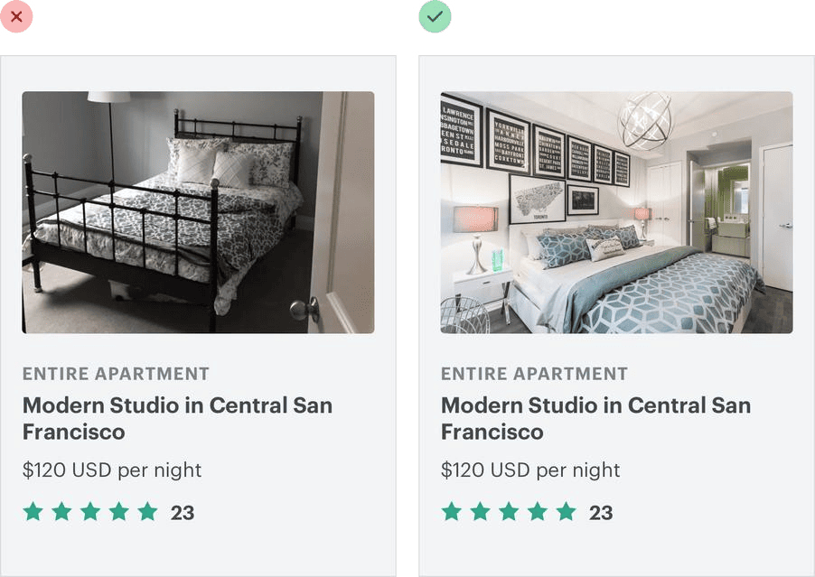
If your design needs photography and you’re not a talented photographer, you’ve got two options:
- Hire a professional photographer.
If you need very specific photos for your project, entrust a professional. Taking great photos isn’t just about using an expensive camera, it’s about lighting, composition, color — skills that take years to develop.
- Use high quality stock photography.
If your needs are more generic, there are tons of great resources out there where you can purchase great stock photos. There are even sites like Unsplash that offer beautiful photography for free.
Whatever you do, don’t design using placeholder images and expect to be able to take some photos with your smartphone and swap them in later. It never works.
Text needs consistent contrast /
Ever tried to slap a headline on a big hero image, only to find that no matter what color you tried for the text, it was still hard to read?
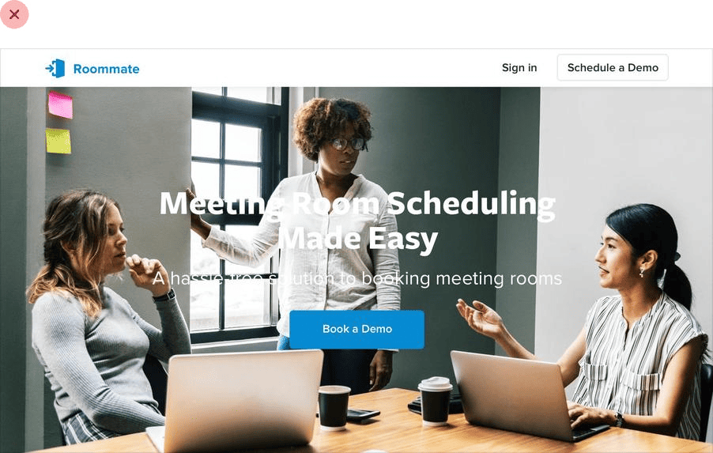
That’s because the problem isn’t the text, it’s the image.
The problem with background images
Photos can be very dynamic, with a lot of really light areas, and a lot of really dark areas. White text might look great in the dark areas, but it gets lost in the light areas. Dark text looks great in the light areas, but gets lost in the dark areas.
To solve this problem, you need to reduce the dynamics in the image to make the contrast between the text and the background more consistent.
Add an overlay /
One way to increase the overall text contrast is to add a semi-transparent overlay to the background image.
A black overlay will tone down the light areas and help light text stand out, while a white overlay will brighten up the dark areas and help dark text stand out.
Lower the image contrast /
One of the compromises you make when using an overlay is that you’re lightening or darkening the whole image, not just the problem areas.
If you want more control, another solution is to lower the contrast of the image itself:
Lowering the contrast will change how light or dark the image feels overall, so make sure to adjust the brightness to compensate.
Colorize the image /
Another way to help text stand out against an image is to colorize the image with a single color.
Some photo editing software includes this as a first-class feature, but if yours doesn’t, you can create this effect in three steps:
- Lower the image contrast, to balance things out a bit.
- Desaturate the image, to remove any existing color.
- Add a solid fill, using the “multiply” blend mode.
This can also be a great way to make a background image pair more nicely with your existing brand colors.
Add a text shadow /
If you want to preserve a bit more of the dynamics in a background image, a text shadow can be a great way to increase contrast only where you need it most.
You want it to look more like a subtle glow than an actual shadow, so use a large blur radius and don’t add any kind of offset.

It’s still a good idea to reduce the overall image contrast, but combining that with a text shadow means you can reduce it a little less.
Everything has an intended size /
Everyone knows that scaling bitmap images to larger than their original size is a bad idea — they immediately feel “fuzzy” and lose their definition.
But that’s not the only way you can go wrong with scaling, even when you think you’re playing it safe.
Don’t scale up icons /
If you’re designing something that could use some large icons (like maybe the “features” section of a landing page), you might instinctively grab your favorite SVG icon set and bump up the size until they fit your needs.
They’re vector images after all, so the quality isn’t going to suffer if you increase the size, right?
While it’s true that vector images won’t degrade in quality when you increase their size, icons that were drawn at 16–24px are never going to look very professional when you blow them up to 3x or 4x their intended size. They lack detail, and always feel disproportionately “chunky”.
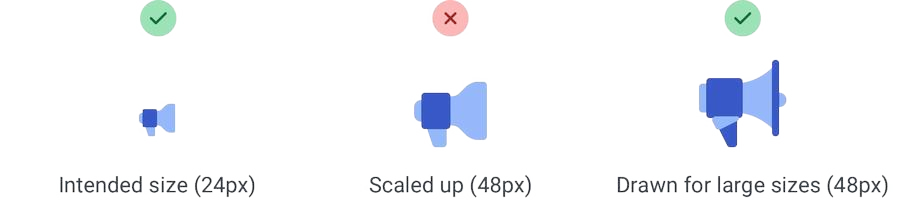
If small icons are all you’ve got, try enclosing them inside another shape and giving the shape a background color:

This lets you keep the actual icon closer to its intended size, while still filling the larger space.
Don’t scale down screenshots /
Say you want to include a screenshot of your app on that same features page.
If you take a full-size screenshot and shrink it by 70% to make it fit, you’ll end up with an image that’s trying to cram way too much detail into far too little space.
The 16px font in your app becomes a 4px font in your screenshot, and visitors will be squinting with their eyeballs two inches from the screen, struggling to make out what all that text says.
If you want to include a detailed screenshot in your design, take the screenshot at a smaller screen size (like maybe your tablet layout) and save a lot of space for it so you don’t have to shrink it as much:
Or consider taking just a partial screenshot, so you can display it in less space without needing to scale it down:
If you really need to fit a whole-app screenshot in a tight space, try drawing a simplified version of the UI with details removed and small text replaced with simple lines:
It’ll still communicate the big-picture design without tempting visitors to try and make out all of the details.
Don’t scale down icons, either /
Just as icons drawn to be used at 16px look chunky when you scale them up, icons intended to be used at larger sizes look choppy and fuzzy when you scale them down.
The most extreme example of this are favicons, those little icons you see next to the page title in a browser tab.
If you try to shrink a logo drawn at 128px down to favicon size, it all turns to mush as the browser tries its best to render all of that detail in a tiny 16px square:
A better approach is to redraw a super simplified version of the logo at the target size, so you control the compromises instead of leaving it up to the browser:
Beware user-uploaded content /
When you’re depending on user-uploaded images, you don’t have the luxury of fine-tuning contrast, carefully adjusting colors, or cropping the perfect frame.
While you’ll always be at your users’ mercy to some extent, there are a few things you can do to make sure their content doesn’t completely undermine your design.
Control the shape and size /
Displaying user-uploaded images at their intrinsic aspect ratio can really throw off a layout, especially if there are a lot of images on the screen at once.
Instead of letting users wreak havoc on your page structure, center their images inside fixed containers, cropping out anything that doesn’t fit.

This is really easy to do with CSS these days by making the image a background image, and setting the background-size property to cover.

Prevent background bleed /
When a user provides an image with a background color that’s similar to the background in your UI, the image and the background can bleed together, causing the image to lose its shape.
Instead of trying to solve this with a border, try using a subtle inner box shadow:
Borders will often clash with the colors in the image, while most people will barely even realize the shadow is there.
If you don’t like the slight “inset” look you get from using a box shadow, a semi-transparent inner border works great, too.
Finishing Touches /
Supercharge the defaults /
You don’t always have to add new elements to a design to add flare — there are a lot of ways to liven up a page by “supercharging” what’s already there.
For example, if your design includes a bulleted list, try replacing the bullets with icons:
Checkmarks and arrows are great generic choices for a lot of situations, but you can also use something more specific to your content, like a padlock icon for a list of security-related features:
Similarly, if you’re working on a testimonial try “promoting” the quotes into visual elements by increasing the size and changing the color:
Links are another great candidate for special styling. You can do something as simple as changing the color and font weight, or something as fancy as a thick and colorful custom underline that partially overlaps the text:
If you’re working on a form, using custom checkboxes and radio buttons is an easy way to add some color to the design:
Just using one of your brand colors for the selected states instead of the browser defaults is often enough to take something from feeling boring to feeling polished and well-designed.
Add color with accent borders /
If you’re not a graphic designer, how do you add that dash of visual flair to your UI that other designs get from beautiful photography or colorful illustrations?
One simple trick that can make a big difference is to add colorful accent borders to parts of your interface that would otherwise feel a bit bland.
For example, across the top of a card:
…or to highlight active navigation items:
…or along the side of an alert message:
…or as a short accent underneath a headline:
…or even across the top of your entire layout:
It doesn’t take any graphic design talent to add a colored rectangle to your UI, and it can go a long way towards making something feel more “designed.”
Decorate your backgrounds /
Even if you do a great job with hierarchy, spacing, and typography, sometimes a design will still feel a little bit plain.
A great way to break up some of the monotony without drastically altering the design is to add some excitement to a few of your backgrounds.
Change the background color
One way to add some excitement to a background is to simply change the color.
This works great for emphasizing an individual panel, as well as for adding some distinction between entire page sections.
For a more energetic look, you could even use a slight gradient:
For best results, use two hues that are no more than about 30° apart.
Use a repeating pattern /
Another approach is to add a subtle repeatable pattern, like this one from Hero Patterns:
You don’t have to necessarily repeat it across the entire background, either — a pattern designed to repeat along a single edge can look great, too.
Keep the contrast between the background and the pattern pretty low to ensure readability.
Add a simple shape or illustration /
Instead of decorating an entire background, you can also try including an individual graphic or two in specific positions.
Simple geometric shapes work well for this:

…as do small chunks of a repeatable pattern:
You can even do something more complex, like a simplified world map:
Just like with a full background pattern, it’s best to keep the contrast low so nothing interferes with the content.
Don’t overlook empty states /
Imagine you’re designing a new feature for an app you’re working on.
You’ve spent a ton of time crafting the perfect realistic sample data, picking out usernames and avatars, and putting together a beautiful and electrifying screen.
You code it all up and deploy it to production. But when an excited user clicks the new item in the nav, they see this:
If you’re designing something that depends on user-generated content, the empty state should be a priority, not an afterthought.
Try incorporating an image or illustration to grab the user’s attention, and emphasizing the call-to-action to encourage them to take the next step:
If you’re working on something that has a bunch of supporting UI like tabs or filters, consider hiding that stuff entirely. There’s no point in presenting a bunch of actions that don’t do anything until the user has created some content.
Empty states are a user’s first interaction with a new product or feature. Use them as an opportunity to be interesting and exciting — don’t settle for plain and boring.
Use fewer borders /
When you need to create separation between two elements, try to resist immediately reaching for a border.
While borders are a great way to distinguish two elements from one another, they aren’t the only way, and using too many of them can make your design feel busy and cluttered.
Use a box shadow
Box shadows do a great job of outlining an element like a border would, but can be more subtle and accomplish the same goal without being as distracting.
This approach works best when the element you are applying the box shadow to is not the same color as the background.
Use two different background colors /
Giving adjacent elements slightly different background colors is usually all you need to create distinction between them.
If you’re already using different background colors in addition to a border, try removing the border; you might not need it.
Add extra spacing /
What better way to create separation between elements than to simply increase the separation?
Spacing things further apart is a great way to create distinction between groups of elements without introducing any new UI at all.
Think outside the box /
Most people have a lot of preconceived notions about how certain components are supposed to look. But just because we’ve been conditioned to believe that there’s only one way to design a particular component, doesn’t mean it’s true.
For example, picture a dropdown menu. You’re probably picturing a white box with a bit of a drop shadow and a list of links stacked inside of it:
But who says a dropdown needs to be a boring list of links? It’s just a floating box on the screen, you can do anything you want with it.
Break it into sections, use multiple columns, add supporting text or colorful icons — do something fun with it!
And don’t just stop at dropdowns; what about something like a table?
When you imagine a table, you probably think of columns that each contain one specific piece of data:
Tables don’t have to work this way, though — if a column doesn’t need to be sortable, there’s no reason you can’t combine it with a related column and introduce some interesting hierarchy:
Table content doesn’t have to be plain text, either. Add images if it makes sense, or introduce some color to enrich the existing data:
How about radio buttons? There’s nothing more boring than a stack of labels with little circles next to them.
If a set of radio buttons are an important part of the UI you’re designing, try something like selectable cards instead:
Don’t let your existing beliefs hold back your designs — constraints are powerful but sometimes a bit of freedom is just what you need to take an interface to the next level.
Leveling Up /
Hopefully after reading this book you feel much more confident in your ability to make something look awesome, without relying on a designer. But even though we’ve tried our best to cram in every good idea we could possibly think of, there will always be more out there to learn.
Here are two of the best ways you can continue to hone your skills, and add new tools to your toolbelt.
Look for decisions you wouldn’t have made /
Whenever you stumble across a design you really like, ask yourself:
“Did the designer do anything here that I never would have thought to do?”
Maybe it’s the way they inverted the background color on a datepicker:
…or the way they positioned a button within a text input instead of on the outside:
…or something as simple as using two different font colors for a headline:
Paying attention to these sorts of unintuitive decisions is a great way to discover new ideas that you can apply to your own designs.
Rebuild your favorite interfaces /
The absolute best way to notice the little details that make a design look really polished is to recreate that design from scratch, without peeking at the developer tools.
When you’re trying to figure out why your version looks different than the original, you’ll discover tricks like “reduce your line height for headings”, “add letter-spacing to uppercase text”, or “combine multiple shadows” all on your own.
By continually studying the work that inspires you with a careful eye, you’ll be picking up design tricks for years to come.
— Adam Wathan & Steve Schoger